<!doctype html>
<html lang="en">
<head>
  <meta charset="utf-8">
  <meta name="viewport" content="width=device-width, initial-scale=1">
  <title>arxiv digest — 2026-07-03</title>
  <style>
:root {
  --bg: #ffffff;
  --fg: #1f2328;
  --muted: #59636e;
  --border: #d0d7de;
  --card: #f6f8fa;
  --link: #0969da;
}
body {
  max-width: 980px;
  margin: 0 auto;
  padding: 2rem 1rem 5rem;
  font-family: -apple-system, BlinkMacSystemFont, "Segoe UI", Helvetica, Arial, sans-serif;
  line-height: 1.55;
  color: var(--fg);
  background: var(--bg);
}
a { color: var(--link); }
img { max-width: 100%; height: auto; }
pre, code { background: var(--card); border-radius: 6px; }
pre { padding: 1rem; overflow-x: auto; }
blockquote { border-left: 4px solid var(--border); padding-left: 1rem; color: var(--muted); }
details { margin: 0.6rem 0; }
summary { cursor: pointer; font-weight: 600; }
.paper-figures-scroll {
  display: flex;
  gap: 1rem;
  overflow-x: auto;
  overscroll-behavior-x: contain;
  padding: 0.75rem 0.25rem 1rem;
  margin: 1rem 0 1.25rem;
  border-top: 1px solid var(--border);
  border-bottom: 1px solid var(--border);
  scroll-snap-type: x proximity;
}
.paper-figure-card {
  flex: 0 0 min(260px, 72vw);
  scroll-snap-align: start;
  background: var(--card);
  border: 1px solid var(--border);
  border-radius: 12px;
  padding: 0.55rem;
}
.paper-figure-card img {
  display: block;
  width: 100%;
  max-height: 240px;
  object-fit: contain;
  background: white;
  border-radius: 8px;
}
.paper-figure-caption {
  display: block;
  margin-top: 0.5rem;
  color: var(--muted);
  font-size: 0.85rem;
}
.figure-strip-hint {
  color: var(--muted);
  font-size: 0.9rem;
  margin-bottom: -0.3rem;
}
</style>
  <!-- MathJax: renders $...$ inline math and $$...$$ display math, plus
       \(...\) and \[...\]. Loaded from the official CDN; works offline
       once cached. Configured to skip code/pre blocks so arxiv IDs that
       look like dollar amounts don't get mangled. -->
  <script>
    window.MathJax = {
      tex: {
        inlineMath: [['$', '$'], ['\\(', '\\)']],
        displayMath: [['$$', '$$'], ['\\[', '\\]']],
        processEscapes: true,
        processEnvironments: true
      },
      options: {
        skipHtmlTags: ['script', 'noscript', 'style', 'textarea', 'pre', 'code'],
        ignoreHtmlClass: 'tex2jax_ignore',
        processHtmlClass: 'tex2jax_process'
      }
    };
  </script>
  <script id="MathJax-script" async
    src="https://cdn.jsdelivr.net/npm/mathjax@3/es5/tex-chtml.js"></script>
</head>
<body>
<header style="background-color: #333; color: white; padding: 15px; margin-bottom: 20px;">
  <h1 style="margin: 0; font-size: 24px;">
    <a href="https://ochelpan.github.io/arXiv_clean/" style="color: white; text-decoration: none;">Main</a>
  </h1>
</header>

<h1>Daily arXiv Report</h1>

<hr>
<p>
<a href="index.html">← Index</a>
 · <a href="papers_05.html">← Previous</a>
</p>
<hr>

<h2>Papers 101–119</h2>
<p><a id="paper-2607.00429"></a></p>
<h3 id="surface-platinum-alloying-for-passivation-of-oxide-interfaces-on-superconducting-niobium-films"><a href="http://arxiv.org/abs/2607.00429v1">Surface Platinum Alloying for Passivation of Oxide Interfaces on Superconducting Niobium Films</a></h3>
<p><strong>Authors:</strong> Ananya Chattaraj, Conan Weiland, Bruce Ravel, Kim Kisslinger, Sooyeon Hwang, Xiao Tong, Ajith Pattammattel, Andrew M. Kiss, Steven L. Hulbert, Aswin kumar Anbalagan, Andrew L. Walter, Peter V. Sushko, Mingzhao Liu<br>
<strong>Type:</strong> both · <strong>Category:</strong> quantum information and computing · <strong>PDF:</strong> <a href="https://arxiv.org/pdf/2607.00429v1">https://arxiv.org/pdf/2607.00429v1</a><br>
<strong>Analysis basis:</strong> full PDF text, analyzed in chunks
<strong>Topic relevance:</strong> 🔥 <code>QC/QI experiment</code> <strong>4/5</strong> · <code>Kondo &amp; dissipative impurity</code> <strong>1/5</strong></p>
<div class="figure-strip-hint">↔ Scroll figures horizontally</div>
<div class="paper-figures-scroll">
<figure class="paper-figure-card">
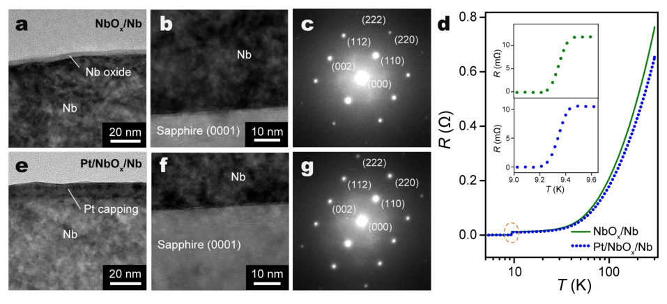
<figcaption class="paper-figure-caption"><b>Fig 1.</b> FIG. 1. (a, b) HRTEM images of bare Nb film near its top surface and near the Nb/Al2O3 interface.</figcaption>
</figure>
<figure class="paper-figure-card">

<figcaption class="paper-figure-caption"><b>Fig 2.</b> FIG. 2. (a) Cross-sectional HAADF-STEM image of a bare Nb thin film deposited on Al2O3,</figcaption>
</figure>
<figure class="paper-figure-card">
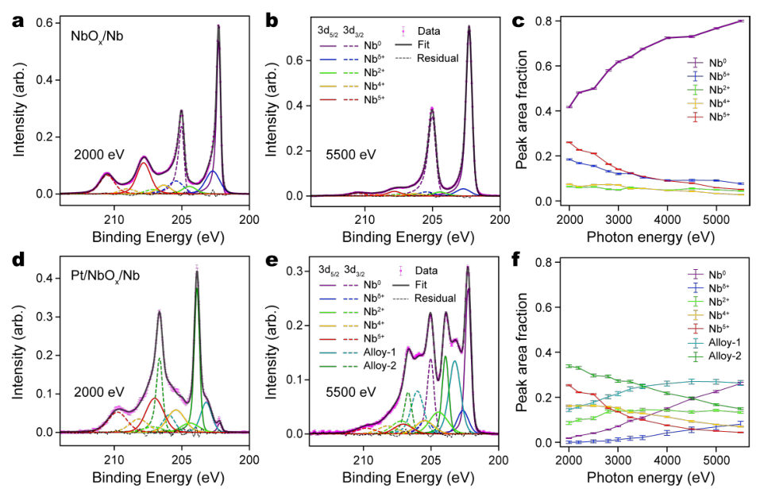
<figcaption class="paper-figure-caption"><b>Fig 3.</b> FIG. 3. (a, b) Nb 3d core-level VEXPS spectra of bare Nb measured at photon energies of 2000 eV</figcaption>
</figure>
<figure class="paper-figure-card">

<figcaption class="paper-figure-caption"><b>Fig 4.</b> FIG. 4. (a) Computational models of representative structures. From left to right: partially</figcaption>
</figure>
<figure class="paper-figure-card">
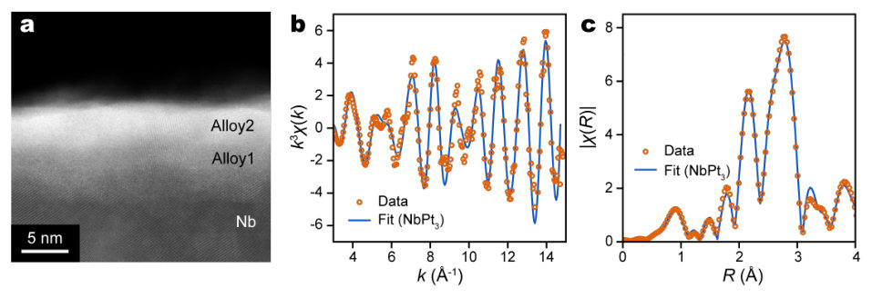
<figcaption class="paper-figure-caption"><b>Fig 5.</b> FIG. 5. (a) Cross-sectional HAADF-STEM image of the top surface of Pt/NbOx/Nb thin film. The</figcaption>
</figure>
</div>

<p><strong>Summary.</strong> This research demonstrates that coating native oxide layers on superconducting Niobium films with Platinum and annealing them creates a stable $   ext{Nb-Pt}$ alloy surface. This alloying process effectively passivates the high-loss oxide interfaces, thereby offering a materials pathway to improve coherence in superconducting transmon qubits.</p>
<p><strong>Why it may be interesting.</strong> The work directly addresses material science limitations in superconducting qubits by providing a chemically robust interface engineering solution, which is crucial for scaling up quantum hardware.</p>
<details>
<summary>Detailed structure</summary>
<p><strong>Main problem.</strong> Dielectric loss from two-level systems (TLS) at surfaces and interfaces limits coherence in superconducting transmon qubits built on Niobium (Nb).</p>
<p><strong>Main result.</strong> A thin Pt encapsulation layer, when annealed, forms a chemically stable metallic Nb-Pt alloy surface that suppresses further oxide growth and maintains high superconducting performance.</p>
<p><strong>Method.</strong> The study combines advanced characterization techniques like VEXPS and EXAFS with first-principles DFT simulations to map the atomic and electronic structure changes at the interface.</p>
<p><strong>Model / system.</strong> The physical system is a superconducting Nb film, which forms native oxides ($  ext{NbO}_x$), followed by Pt deposition and thermal annealing. The focus is on engineering a robust, low-loss $ ext{Nb-Pt}$ alloy interface.</p>
<p><strong>Key observables.</strong> Superconducting Transition Temperature ($T_c = 9.30 \pm 0.10$ K), Residual Resistance Ratio (RRR &gt; 63), chemical oxidation states ($    ext{Nb}^0,  ext{Nb}^{5+}$), and the formation of $  ext{NbPt}_3$ alloy phases.</p>
<p><strong>Important parameters / regimes.</strong> Annealing temperature ($750^\circ	ext{C}$), Pt layer thickness ($\approx 10 	ext{ nm}$), and specific binding energy shifts observed in VEXPS spectra.</p>
<p><strong>Assumptions / limitations.</strong> VEXPS fitting requires assuming specific line shape models (Voigt/Skewed Voigt) for accurate deconvolution of overlapping chemical states. The structural analysis relies on matching EXAFS data to idealized alloy models ($    ext{NbPt}_3$).</p>
<p><strong>Figures summary.</strong> Figures show TEM cross-sections confirming layer structure, VEXPS spectra detailing oxidation state changes, and EXAFS fits demonstrating the formation of a $ ext{Pt}$-rich $ ext{NbPt}_3$ interfacial alloy.</p>
<p><strong>Paper structure.</strong> The paper progresses from identifying the loss mechanism (TLS in native oxides) to proposing Pt passivation. It then uses VEXPS/DFT to characterize oxide states, followed by EXAFS analysis to confirm the specific $ ext{Nb-Pt}$ alloy structure ($  ext{NbPt}_3$), and finally validates this protective layer using cross-sectional microscopy.</p>
</details>
<details>
<summary>Abstract</summary>
<p>Dielectric loss arising from two-level systems (TLS) at surfaces and interfaces remains a primary limitation to coherence in superconducting transmon qubits. Niobium (Nb), a widely used material in superconducting quantum circuits, readily forms native oxides under ambient conditions, leading to lossy dielectric interfaces that degrade device performance. Here, a robust and scalable fabrication strategy is demonstrated for chemically stabilizing Nb surfaces and mitigating further oxidation, including protection of both surface and sidewall regions. High-purity Nb films were fabricated with bulk-like superconducting transition temperatures ($T_c = 9.30\pm0.10$) K. We demonstrate that a thin Pt encapsulation layer, deposited after native oxide formation, can be transformed via thermal annealing into a Nb-Pt alloy at the surface. Spectroscopic and microscopic analyses confirm the formation of a chemically stable metallic alloy layer and its ability to suppress further oxide growth. Ab initio simulations elucidate the atomic-scale rearrangement and electronic structure evolution associated with Pt incorporation on native niobium oxide, providing insight into the stabilization mechanism of the alloyed surface. This approach offers a materials pathway for engineering chemically robust Nb interfaces, including sidewalls, toward higher-coherence superconducting qubit architectures."</p>
</details>
<p><sub><a href="#top">↑ back to top</a></sub></p>

<p><a id="paper-2607.00903"></a></p>
<h3 id="characterization-of-hydroxyls-in-surface-oxide-of-superconducting-tantalum-and-their-mitigation-in-quantum-circuits"><a href="http://arxiv.org/abs/2607.00903v1">Characterization of Hydroxyls in Surface Oxide of Superconducting Tantalum and Their Mitigation in Quantum Circuits</a></h3>
<p><strong>Authors:</strong> Ekta Bhatia, Nicholas Pieniazek, Aleksandra Biedron, Sandra Schujman, Hunter Frost, Zhihao Xiao, Jakub Nalaskowski, Kevin Musick, Thomas Murray, Satyavolu Papa Rao<br>
<strong>Type:</strong> experiment · <strong>Category:</strong> quantum information and computing · <strong>PDF:</strong> <a href="https://arxiv.org/pdf/2607.00903v1">https://arxiv.org/pdf/2607.00903v1</a><br>
<strong>Analysis basis:</strong> full PDF text, analyzed in chunks
<strong>Topic relevance:</strong> 🔥 <code>QC/QI experiment</code> <strong>4/5</strong></p>
<div class="figure-strip-hint">↔ Scroll figures horizontally</div>
<div class="paper-figures-scroll">
<figure class="paper-figure-card">
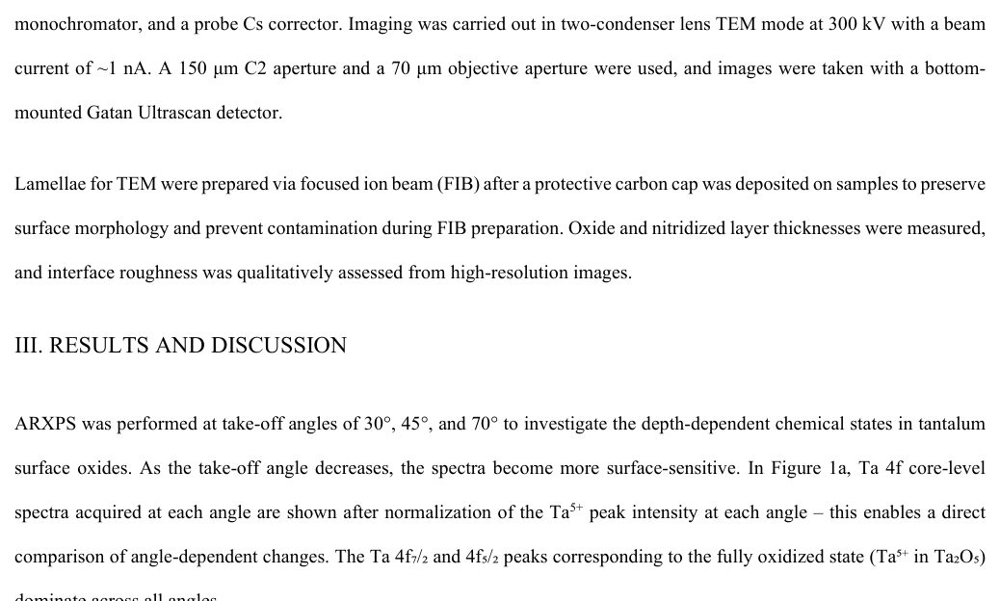
<figcaption class="paper-figure-caption"><b>Fig 1.</b> Figure 1b quantifies the peak intensities extracted from panel (a), grouped by chemical state and plotted for each angle. While</figcaption>
</figure>
<figure class="paper-figure-card">

<figcaption class="paper-figure-caption"><b>Fig 2.</b> Figure 3c shows a nitridized Ta sample, where a distinct nitridized layer forms at the Ta surface due to its reaction with nitrogen</figcaption>
</figure>
<figure class="paper-figure-card">

<figcaption class="paper-figure-caption"><b>Fig 3.</b> FIG. 3. Cross-sectional HR-TEM images of surface oxides on tantalum under different processing conditions: (a) Native oxide formed via ambient exposure. (b) CMP-processed sample shows a more planar surface and similar thickness as native oxide. (c) Nitridized Ta surface shows a nitridized layer under a protective cap deposited after 3 weeks of ambient exposure.</figcaption>
</figure>
<figure class="paper-figure-card">

<figcaption class="paper-figure-caption"><b>Fig 4.</b> FIG. 1. Angle-resolved X-ray photoelectron spectroscopy (ARXPS) analysis of Ta oxidation states as a function of sampling depth. (a) Ta 4f core-level spectra acquired at take-off angles of 30°, 45°, and 70°, normalized to the Ta₂O₅ peak at each angle to show comparison of underlying oxidation states. (b) Relative peak intensities of Ta⁵⁺ (Ta₂O₅), TaOₓ&lt;2.5, and Ta⁰ extracted by CasaXPS curve fitting for each angle. The inset schematically illustrates the corresponding layered structure based on ARXPS analysis.</figcaption>
</figure>
<figure class="paper-figure-card">

<figcaption class="paper-figure-caption"><b>Fig 5.</b> FIG. 2. Depth profiles of oxide species and hydroxyl content in native and CMP-formed tantalum oxides: SIMS data showing the normalized intensities of Ta₂O₅, TaOH, and Ta signals plotted as a function of sputter depth. The TaOH/Total signal reaches a maximum in</figcaption>
</figure>
</div>

<p><strong>Summary.</strong> The research characterizes the formation and location of hydroxyl defects within the surface oxides of superconducting Tantalum. Using advanced depth profiling techniques, the authors show that these hydroxyls accumulate in suboxide regions, acting as a source of decoherence. They demonstrate that controlled surface treatments like CMP or plasma nitridization can effectively suppress this detrimental hydroxyl incorporation.</p>
<p><strong>Why it may be interesting.</strong> This work directly addresses material science limitations for superconducting qubits by providing actionable surface engineering protocols to reduce dielectric loss mechanisms relevant to quantum coherence.</p>
<details>
<summary>Detailed structure</summary>
<p><strong>Main problem.</strong> Surface oxides on superconducting Tantalum (Ta) host Two-Level System (TLS) defects, which are a primary source of microwave loss and decoherence in quantum circuits.</p>
<p><strong>Main result.</strong> Hydroxyl accumulation is found preferentially in the sub-stoichiometric oxide region ($    ext{TaO}_x$), and this incorporation can be suppressed by surface engineering techniques like Chemical Mechanical Planarization (CMP) or plasma nitridization.</p>
<p><strong>Method.</strong> The study employs a combination of Secondary Ion Mass Spectrometry (SIMS) depth profiling, Angle-resolved X-ray Photoelectron Spectroscopy (ARXPS), and Transmission Electron Microscopy (TEM) to characterize the oxide layers.</p>
<p><strong>Model / system.</strong> The physical system is superconducting Tantalum ($\alpha$-Ta) films whose surface oxides are analyzed. The focus is on the chemical structure and defect density within these native or engineered oxide layers, which act as lossy dielectrics in quantum circuits.</p>
<p><strong>Key observables.</strong> Depth profiles of $    ext{Ta}_2   ext{O}_5$, $    ext{TaOH}$, and metallic Ta; quantification of hydroxyl species ($   ext{TaOH}^-$) concentration across different surface treatments.</p>
<p><strong>Important parameters / regimes.</strong> Oxide thickness, relative concentrations of $   ext{Ta}$ oxidation states ($    ext{Ta}^{5+}$, $    ext{TaO}_x$), and the effectiveness of mitigation techniques (CMP, nitridization).</p>
<p><strong>Assumptions / limitations.</strong> The accumulation of hydroxyls in the suboxide region is hypothesized to be the molecular origin of TLS defects causing decoherence.</p>
<p><strong>Figures summary.</strong> Figures show ARXPS analysis confirming a stratified oxide structure; SIMS depth profiles illustrate $  ext{TaOH}$ accumulation beneath the surface layer, and comparative figures quantify the reduction of this hydroxyl content after CMP or nitridization treatments.</p>
<p><strong>Paper structure.</strong> The paper first establishes the problem (TLS loss in Ta oxides) using ARXPS to map chemical states. It then uses SIMS depth profiling to pinpoint hydroxyl accumulation in suboxides. Finally, it compares native vs. engineered surfaces (CMP/nitrided) via quantitative measurements to demonstrate mitigation feasibility.</p>
</details>
<details>
<summary>Abstract</summary>
<p>Recently, tantalum (Ta) has gained attention in superconducting quantum circuits due to the longer coherence times achieved when replacing niobium (Nb) in capacitor pads. Previous literature shows that surface oxides that form upon ambient exposure on superconducting metals such as Ta, Al, and Nb host two-level system (TLS) defects, which are a leading source of microwave loss and decoherence. While the surface oxides of Nb and Al have been extensively studied, Ta oxides remain less well understood. Using secondary ion mass spectrometry of alpha-Ta films deposited at 300 mm wafer scale, we show for the first time that hydroxyls accumulate in the Ta suboxide region above the underlying Ta. Angle-resolved X-ray photoelectron spectroscopy shows that the surface region is dominated by Ta2O5, with sub-stoichiometric TaOx present in between the Ta2O5 and underlying Ta. The thickness of the tantalum oxide is confirmed by transmission electron microscopy. We demonstrate that [OH] incorporation can be suppressed by replacing the native oxide with an oxide formed during chemical mechanical planarization of alpha-Ta films. Our findings support the hypothesis that TLS defects are non-uniform within the oxide thickness and suggest hydroxyls as a probable molecular origin of these loss channels. Furthermore, we show the feasibility of plasma nitridization as a method to decrease hydroxyl loading on alpha-Ta surfaces. The modulation of hydroxyl content through surface engineering of alpha-Ta can enable the fabrication of more robust, high-coherence superconducting quantum circuits by addressing a potential TLS source.</p>
</details>
<p><sub><a href="#top">↑ back to top</a></sub></p>

<p><a id="paper-2607.00769"></a></p>
<h3 id="universal-logic-circuit-for-gate-controlled-superconductor-based-switches-operating-at-liquid-helium-temperatures"><a href="http://arxiv.org/abs/2607.00769v1">Universal logic circuit for gate-controlled superconductor-based switches operating at liquid-helium temperatures</a></h3>
<p><strong>Authors:</strong> Martin Berke, Lőrinc Kupás, Tosson Elalaily, Máté Sütő, Szabolcs Csonka, Péter Makk<br>
<strong>Type:</strong> experiment · <strong>Category:</strong> quantum information and computing · <strong>PDF:</strong> <a href="https://arxiv.org/pdf/2607.00769v1">https://arxiv.org/pdf/2607.00769v1</a><br>
<strong>Analysis basis:</strong> full PDF text, analyzed in chunks
<strong>Topic relevance:</strong> 🔥 <code>QC/QI experiment</code> <strong>4/5</strong></p>
<div class="figure-strip-hint">↔ Scroll figures horizontally</div>
<div class="paper-figures-scroll">
<figure class="paper-figure-card">

<figcaption class="paper-figure-caption"><b>Fig 1.</b> Fig. 1. Device configuration (a) The device consists of three NWs (blue) that are connected to a common line (green) at one end, and there are two more contacts (green) at the other end of each NW. Each NW is con- trolled by two side gate electrodes (orange). (b) Optical microscope image of a device. Scale bar: 25 µm (c) SEM image of the active region of the device showing the wire and the gate electrodes Scale bar: 100 nm.</figcaption>
</figure>
<figure class="paper-figure-card">
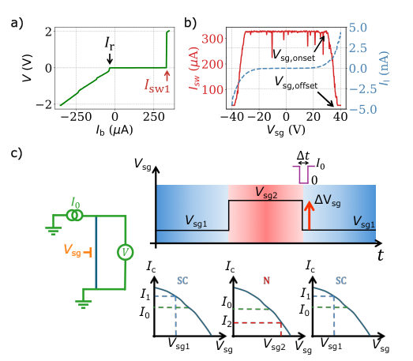
<figcaption class="paper-figure-caption"><b>Fig 2.</b> Fig. 2. Suppression of the supercurrent with gating the device and logic operation principle (a) V −I curve of a NW measured at 4 K. (b) The critical cur- rent of a NW as a function of the applied gate voltage on one of the side-gate electrodes (red) and the leakage current calculated from the voltage drop measured across a pre-resistor (blue). With increasing gate voltage on the side-gate electrode, the critical current of the NW can be suppressed, accompanied by a large enhancement in the leakage current. (c) An external voltage signal can switch a NW between the SC and N states. For devices where the onset and offset of the gating effect correspond to gate voltages largar than 5 V, the...</figcaption>
</figure>
<figure class="paper-figure-card">
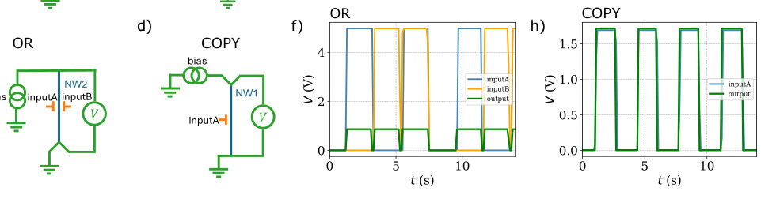
<figcaption class="paper-figure-caption"><b>Fig 3.</b> Fig. 3. Logic gates operation for the AND, OR, NOT and COPY gates. (a)-(d) The schematic circuit diagram for the AND, OR, NOT and COPY gates. The input signals inputA and inputB represent the additional gate voltage on top of the gate voltage setting the working point on panels (e)-(h). (e) The logic operation of the AND gate. There is a clear increase in the output voltage (green) as the function of time, when both input signals (blue, orange) are high. (f) The logic operation of the OR gate. The output voltage (green) as the input signals (blue, orange) are changed with respect to time. A clear increase in the output voltage can be seen, when any or both input signals are high. (g) The...</figcaption>
</figure>
</div>

<p><strong>Summary.</strong> The authors demonstrate a universal logic circuit by utilizing gate-controlled switches based on superconducting nanowires operating at liquid helium temperatures. By controlling the supercurrent via an applied gate voltage, they create reliable switching elements capable of implementing all classical logic gates (AND, OR, NOT) and combinational circuits. This work establishes a functional, scalable building block for future hybrid superconducting computers.</p>
<p><strong>Why it may be interesting.</strong> This work directly addresses hardware implementation for classical computation using superconducting electronics, providing a solid experimental platform that could be relevant for developing control logic in quantum computing architectures.</p>
<details>
<summary>Detailed structure</summary>
<p><strong>Main problem.</strong> Developing a superconducting building block for classical hybrid supercomputers due to scaling limitations and power consumption issues in conventional CMOS devices.</p>
<p><strong>Main result.</strong> A universal logic circuit, realizing AND, OR, NOT, COPY gates, and the half-adder using only three gate-controlled superconducting nanowires was demonstrated.</p>
<p><strong>Method.</strong> The functionality is achieved by exploiting the Gate-Controlled Supercurrent (GCS) effect in superconducting nanowires, which acts as a voltage-controlled switch between superconducting and normal states.</p>
<p><strong>Model / system.</strong> The physical platform consists of superconducting nanowires (NbTiN) fabricated on silicon chips, controlled electrostatically via side-gate electrodes. Operation requires cryogenic temperatures ($    ext{T} \approx 4    ext{ K}$).</p>
<p><strong>Key observables.</strong> Switching current ($I_{sw}$), critical current ($I_c$) vs. gate voltage ($V_{sg}$), and the resulting output voltage (high $\approx 2	ext{ V}$ in normal state, zero in superconducting state).</p>
<p><strong>Important parameters / regimes.</strong> Operating temperature ($    ext{LHe}$), gate voltages ($    ext{V}<em ext_g_offset="ext{g,offset">{    ext{g,onset}} \approx 30    ext{ V}$, $ ext{V}</em>$), and bias currents ($I_b$).}} \approx 40   ext{ V</p>
<p><strong>Assumptions / limitations.</strong> The logic operation relies on setting the bias current below the retrapping current during switching events; minor scattering is attributed to thermal fluctuations.</p>
<p><strong>Figures summary.</strong> Figures illustrate $V$-$I$ curves showing gate-controlled switching (SC $\leftrightarrow$ N states) and time-domain plots demonstrating the truth tables for AND, OR, NOT, XOR, etc., gates using specific input/output voltage levels.</p>
<p><strong>Paper structure.</strong> The paper systematically demonstrates the realization of basic logic gates (AND, OR, NOT, COPY) first, then expands to more complex combinational circuits like the half-adder and even a ring oscillator, proving the universality of the architecture.</p>
</details>
<details>
<summary>Abstract</summary>
<p>The observation of the gate-controlled supercurrent (GCS) effect in superconducting nanostructures initiated major research efforts toward the realisation of superconducting-based computing architectures. Here we introduce a universal logic circuit that can be a promising superconducting building block of classical hybrid supercomputers. We demonstrate a functionally complete set of logic gates by realising the AND, OR, NOT and COPY gates. The general layout and scalability of our device, combined with recent experiments demonstrating fast switching and small voltage signals, make it a functional candidate in superconducting electronics. Our device enables the realization of all classical logic gates and the half-adder combinational logic circuit using at most three nanowires, each uniquely configured with two side-gate electrodes.</p>
</details>
<p><sub><a href="#top">↑ back to top</a></sub></p>

<p><a id="paper-2607.00993"></a></p>
<h3 id="magnon-polaron-mediated-spin-seebeck-effect-in-altermagnets"><a href="http://arxiv.org/abs/2607.00993v1">Magnon-polaron mediated spin Seebeck effect in altermagnets</a></h3>
<p><strong>Authors:</strong> Ilia Moghayer, Ritesh Das, Yaroslav M. Blanter<br>
<strong>Type:</strong> theory · <strong>Category:</strong> other · <strong>PDF:</strong> <a href="https://arxiv.org/pdf/2607.00993v1">https://arxiv.org/pdf/2607.00993v1</a><br>
<strong>Analysis basis:</strong> full PDF text, analyzed in chunks
<strong>Topic relevance:</strong> <code>Keldysh / 2PI / non-Gaussian methods</code> <strong>3/5</strong> · <code>spintronics-quantum-optics interface</code> <strong>3/5</strong> · <code>analog quantum simulation</code> <strong>2/5</strong> · <code>driven-dissipative phase transition</code> <strong>2/5</strong> · <code>methods for driven-dissipative</code> <strong>2/5</strong> · <code>non-equilibrium dynamics</code> <strong>2/5</strong> · <code>correlated / nonlocal dissipation</code> <strong>1/5</strong> · <code>exotic spin models in light-matter</code> <strong>1/5</strong> · <code>non-equilibrium universality</code> <strong>1/5</strong></p>
<div class="figure-strip-hint">↔ Scroll figures horizontally</div>
<div class="paper-figures-scroll">
<figure class="paper-figure-card">

<figcaption class="paper-figure-caption"><b>Fig 1.</b> FIG. 1: (a) Lattice structure of the altermagnetic toy model. The lattice has a checkerboard shape with sites alternating between up and down spins. The alter- magnetic nature arises from the anisotropic next-nearest neighbor interaction (J2 ̸= J′ 2). (b) Schematic of spin Seebeck effect in the bulk altermagnetic system. The bulk consists of multiple altermagnetic monolayers cou- pled ferromagnetically to each other. A temperature gra- dient is applied along direction β (shown along y here) and the spin Seebeck response is measured along direc- tion α.</figcaption>
</figure>
<figure class="paper-figure-card">

<figcaption class="paper-figure-caption"><b>Fig 2.</b> FIG. 2: Spin Seebeck coefficient S2D xx and S2D yy as a func- tion of applied magnetic field without phonon contribu- tions for (a) antiferromagnetic and (b) altermagnetic con- figurations in the 2D limit.</figcaption>
</figure>
<figure class="paper-figure-card">

<figcaption class="paper-figure-caption"><b>Fig 3.</b> FIG. 4: SSE vs. applied magnetic field along different x and y directions with magnetoelastic coupling for (a) an antiferromagnetic lattice and (b) for an altermagnetic lattice in the 3D bulk case.</figcaption>
</figure>
<figure class="paper-figure-card">
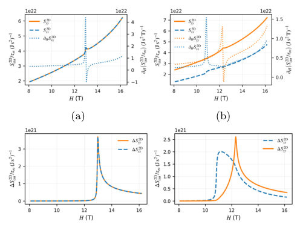
<figcaption class="paper-figure-caption"><b>Fig 4.</b> FIG. 3: SSE vs. applied magnetic field in-plane along the x and y directions with magnetoelastic coupling for (a) an antiferromagnetic lattice and (b) for an altermagnetic lattice in the monolayer limit. Peaks in SSE are seen at the same magnetic field for the antiferromagnetic case in both S2D xx and S2D yy . For the altermagnetic case, the peak in S2D xx appears at a magnetic field different from the peak in S2D yy . The features are seen clearly by calculating the difference in SSE due to phonons (c) ∆Sxx and (d) ∆Syy vs. magnetic field. τm is the magnon lifetime.</figcaption>
</figure>
<figure class="paper-figure-card">

<figcaption class="paper-figure-caption"><b>Fig 5.</b> FIG. 2. Contour plot of the magnon dispersion in the toy model in the altermagnetic condition. The left panel rep- resents the dispersion of the A mode, while the right panel shows the B mode.</figcaption>
</figure>
</div>

<p><strong>Summary.</strong> This work proposes using the Spin Seebeck Effect (SSE) as a definitive transport diagnostic tool to identify altermagnetic materials. By modeling magnon-phonon coupling, the authors show that altermagnets exhibit unique directional anisotropy and resonant features in the SSE that are absent or different in conventional antiferromagnets. This provides a clear pathway for experimental verification of novel magnetic orders.</p>
<p><strong>Why it may be interesting.</strong> While focused on condensed matter magnetism, the use of non-equilibrium Green's functions/Boltzmann theory for spin transport bridges concepts relevant to open quantum systems and energy dissipation mechanisms studied in AMO physics.</p>
<details>
<summary>Detailed structure</summary>
<p><strong>Main problem.</strong> To find experimentally accessible transport signatures that can distinguish altermagnets from conventional ferromagnets and antiferromagnets.</p>
<p><strong>Main result.</strong> The Spin Seebeck Effect (SSE) exhibits pronounced, directionally anisotropic features and resonant peaks due to magnon-polaron coupling, providing a robust signature for altermagnetic order.</p>
<p><strong>Method.</strong> Theoretical calculation using the Boltzmann transport equation applied to hybridized magnon-phonon modes derived from a minimal spin Hamiltonian model.</p>
<p><strong>Model / system.</strong> The study uses a toy magnetic lattice model incorporating nearest and next-nearest neighbor couplings, distinguishing between altermagnets ($J_2 
eq J'_2$) and antiferromagnets ($J_2 = J'_2$). The analysis extends to include magnetoelastic interactions leading to magnon-polaron coupling.</p>
<p><strong>Key observables.</strong> Spin Seebeck coefficient ($    ext{S}<em xx>{\alphaeta}$), directional anisotropy ($ ext{S}</em> 
eq  ext{S}_{yy}$), and resonant peak positions in the SSE vs. magnetic field.</p>
<p><strong>Important parameters / regimes.</strong> External magnetic field strength ($H$), coupling constants ($J_1, J_2, D$), and phonon/magnon frequencies.</p>
<p><strong>Assumptions / limitations.</strong> The analysis relies on a minimal toy model and utilizes approximations like the spin-wave approximation and linear resonant coupling between magnons and phonons.</p>
<p><strong>Figures summary.</strong> Figures illustrate magnon dispersion relations showing band splitting in altermagnets versus degeneracy in antiferromagnets, and compare directional SSE measurements for both types of magnets.</p>
<p><strong>Paper structure.</strong> The paper progresses from establishing the need for a diagnostic probe (SSE) to developing the theoretical framework by modeling the Hamiltonian, calculating the coupled magnon-polaron dynamics, and finally demonstrating the unique anisotropic signatures of altermagnetism in transport coefficients.</p>
</details>
<details>
<summary>Abstract</summary>
<p>Altermagnets, distinguished by compensated antiparallel spins yet nondegenerate magnon spectra, bridge the gap between ferromagnets and antiferromagnets. Although several probes such as anisotropic transport and spectroscopic measurements have been proposed to identify altermagnetic order, experimentally accessible transport signatures remain highly desirable. Here, we show that in altermagnets subject to an external magnetic field, the spin Seebeck effect exhibits pronounced directional anisotropy. Specifically, the spin Seebeck coefficient differs significantly along in-plane directions, and this anisotropy increases with field strength. Magnetoelastic interactions further produce resonant peaks whose positions with respect to an applied magnetic field reflect the intrinsic magnon band anisotropy, and provide localized features that enhance the distinguishability of the altermagnetic response. The peaks provide a robust experimental signature of altermagnetic order. Our findings serve as signatures of altermagnetic order while laying the groundwork for their application in spintronic devices.</p>
</details>
<p><sub><a href="#top">↑ back to top</a></sub></p>

<p><a id="paper-2607.00271"></a></p>
<h3 id="valley-dependent-electron-optics-using-quantum-dots-in-bilayer-graphene"><a href="http://arxiv.org/abs/2607.00271v1">Valley-dependent electron optics using quantum dots in bilayer graphene</a></h3>
<p><strong>Authors:</strong> Fereshte Ildarabadi, Stephen R. Power<br>
<strong>Type:</strong> theory · <strong>Category:</strong> other · <strong>PDF:</strong> <a href="https://arxiv.org/pdf/2607.00271v1">https://arxiv.org/pdf/2607.00271v1</a><br>
<strong>Analysis basis:</strong> full PDF text, analyzed in chunks
<strong>Topic relevance:</strong> <code>Keldysh / 2PI / non-Gaussian methods</code> <strong>3/5</strong> · <code>spintronics-quantum-optics interface</code> <strong>3/5</strong> · <code>Kondo &amp; dissipative impurity</code> <strong>2/5</strong> · <code>methods for driven-dissipative</code> <strong>2/5</strong> · <code>non-equilibrium dynamics</code> <strong>2/5</strong> · <code>analog quantum simulation</code> <strong>1/5</strong> · <code>correlated / nonlocal dissipation</code> <strong>1/5</strong> · <code>driven-dissipative phase transition</code> <strong>1/5</strong> · <code>interference shaping light</code> <strong>1/5</strong> · <code>non-equilibrium universality</code> <strong>1/5</strong></p>
<div class="figure-strip-hint">↔ Scroll figures horizontally</div>
<div class="paper-figures-scroll">
<figure class="paper-figure-card">

<figcaption class="paper-figure-caption"><b>Fig 1.</b> FIG. 1: (a) Schematic of two oppositely gated QDs with ra- dius R in BLG. (b) Gaussian beam propagating along the x direction. W0 is the beam waist, and θbeam denotes the char- acteristic divergence angle.</figcaption>
</figure>
<figure class="paper-figure-card">
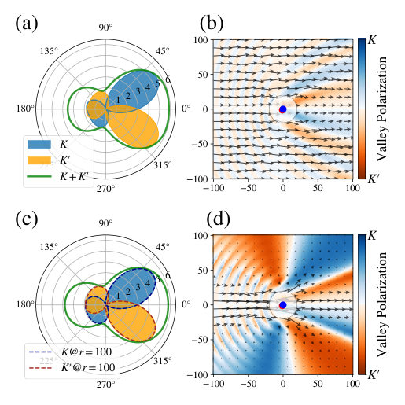
<figcaption class="paper-figure-caption"><b>Fig 2.</b> FIG. 2: (a) Far-field angular dependence of the valley-resolved and total (K+K′) scattered current for plane-wave incidence; (b) Corresponding total current flow (arrows) and valley po- larization (color map). (c) Same angular dependence for a Gaussian beam; dashed curves indicate currents evaluated at finite distance; (d) Corresponding current flow and valley po- larization.</figcaption>
</figure>
<figure class="paper-figure-card">

<figcaption class="paper-figure-caption"><b>Fig 3.</b> FIG. 3: (a) Current flow (arrows) and density (color map) for the K valley under Gaussian-beam incidence. (b) Decompo- sition into incident, scattered, and interference contributions. (c) Difference current map ∆jK. the K′ response is the mirror image of the K response with respect to the x axis for (a)- (c). (d) Angular dependence of ∆jK at r = 100 l0 denoted by dashed circle in (c). Light colors curves show far-field re- sults; orange curves correspond to the K′ valley. The inset polar sector shows negative contributions within ±θbeam, cor- responding to forward-current suppression.</figcaption>
</figure>
<figure class="paper-figure-card">

<figcaption class="paper-figure-caption"><b>Fig 4.</b> FIG. 4: Valley-resolved current distributions resulting from multiple scattering by two identical QDs under Gaussian- beam incidence. (a) ∆j for vertically aligned dots with d = 8R (upper-left inset), showing efficient valley splitting. Blue and orange curves correspond to the K and K′ valleys, respectively; the dashed curves in the right inset show the negative part of ∆j in the forward-direction beam region. (b) Corresponding K-valley current-flow (arrows) and elec- tron density (color map); the K′ response is the mirror image of the K response with respect to the x axis. (c)–(e) ∆j for vertically aligned dots with d = 4R, and horizontally aligned dots with d = 8R and 4R, respectively.</figcaption>
</figure>
<figure class="paper-figure-card">
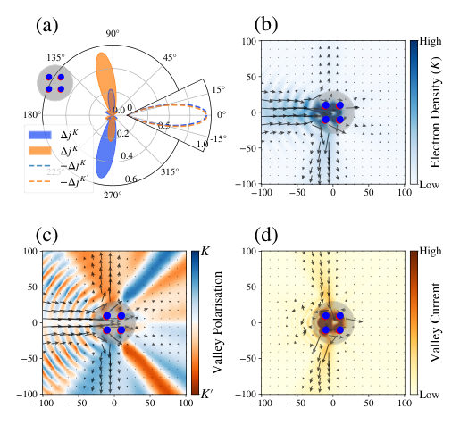
<figcaption class="paper-figure-caption"><b>Fig 5.</b> FIG. 5: Valley-resolved current for a 2 × 2 array of identical QDs with d = 4R. (a) ∆j, showing strong transverse deflec- tion and reduced valley overlap, forming an efficient valley splitter. (b) Corresponding K-valley current-flow (arrows) and electron density (color map); the K′ response is its mir- ror image with respect to the x-axis. (c) Total current map overlaid on the valley polarization color map. (d) Valley cur- rent map, showing strong transverse valley separation.</figcaption>
</figure>
</div>

<p><strong>Summary.</strong> The paper proposes using arrays of electrostatically gated quantum dots in bilayer graphene to achieve controllable valley-dependent electron optics. By exploiting the valley-dependent mass term induced by gating, the QDs can act as precise switches: identical pairs split the current into two valleys, while oppositely gated pairs filter one valley out. This establishes a realistic platform for manipulating spin/valley polarization without external fields.</p>
<p><strong>Why it may be interesting.</strong> This work models coherent electron transport through engineered nanoscale potentials (QDs), which is highly relevant to open quantum systems dynamics and mesoscopic physics where boundary conditions dictate wave function evolution.</p>
<details>
<summary>Detailed structure</summary>
<p><strong>Main problem.</strong> To develop a tunable platform for valley-dependent electron optics in bilayer graphene (BLG) using electrostatically defined quantum dots (QDs).</p>
<p><strong>Main result.</strong> The study demonstrates that QD arrays can function as controllable valley splitters or filters, enabling the generation and steering of highly valley-polarized currents with strong suppression of forward transmission.</p>
<p><strong>Method.</strong> Theoretical analysis employing a four-band continuum model and generalized multiple-scattering formalism to calculate valley-resolved current densities ($\mathbf{j}_	au$).</p>
<p><strong>Model / system.</strong> The system is Bernal-stacked BLG containing electrostatically defined QDs. The key mechanism relies on layer-antisymmetric gating, which induces a valley-dependent mass-like term in the Hamiltonian.</p>
<p><strong>Key observables.</strong> Valley-resolved currents ($\mathbf{j}_K$ vs $\mathbf{j}_{K'}$), angular profiles, and valley polarization $P$.</p>
<p><strong>Important parameters / regimes.</strong> Gate asymmetries (e.g., 152 meV), dot radius ($R=10 	ext{ nm}$), Fermi energy ($\approx 19 	ext{ meV}$).</p>
<p><strong>Assumptions / limitations.</strong> The analysis assumes ballistic transport and uses approximations like truncating the angular momentum sum at a finite cutoff $M$.</p>
<p><strong>Figures summary.</strong> Figures illustrate far-field angular dependence of valley currents (plane-wave vs. Gaussian beam), current decomposition ($\mathbf{j}_{	ext{inc}} + \mathbf{j}_{	ext{sc}} + \mathbf{j}_{	ext{int}}$), and engineered patterns showing splitting or filtering effects in multi-dot arrays.</p>
<p><strong>Paper structure.</strong> The paper progresses from single-dot scattering analysis to Gaussian beam excitation, then details the decomposition of total current into incident, scattered, and interference parts for multiple dots, culminating in demonstrating complex array functionalities like valley splitting and filtering.</p>
</details>
<details>
<summary>Abstract</summary>
<p>Electrostatically defined quantum dots (QDs) with layer-antisymmetric gating in Bernal-stacked bilayer graphene (BLG) open a local gap and generate a mass-like term with opposite sign in the two valleys, producing strongly valley-dependent scattering without magnetic fields, strain, or spin-orbit coupling. Building on this mechanism, we propose a tunable platform based on such QDs for valley-dependent electron optics in BLG. Using a four-band continuum model and a generalized multiple-scattering formalism, we analyze scattering of Gaussian electron beams from single- and multi-dot architectures and compute valley-resolved currents and angular profiles. A single dot produces distinct valley-dependent deflection, while multi-dot configurations enable enhanced control: identical-dot arrays act as valley splitters, whereas oppositely gated pairs function as valley filters. Combining these elements yields tunable generation, steering, and filtering of highly valley-polarized currents with strong suppression of forward transmission. The required energy scales, gate asymmetries, and device dimensions are within experimentally accessible regimes for dual-gated BLG, establishing quantum-dot arrays as a realistic platform for controllable valley-resolved electron optics.</p>
</details>
<p><sub><a href="#top">↑ back to top</a></sub></p>

<p><a id="paper-2607.00615"></a></p>
<h3 id="evanescent-absorption-spectroscopy-of-transition-metal-dichalcogenide-materials-using-guided-photoluminescence-in-simath1064mathnmath1065math-photonic-waveguides"><a href="http://arxiv.org/abs/2607.00615v1">Evanescent absorption spectroscopy of transition metal dichalcogenide materials using guided photoluminescence in Si$_3$N$_4$ photonic waveguides</a></h3>
<p><strong>Authors:</strong> Victor Gonzalez-Morote, Marianna Sledzinska, Arkadiusz P. Gertych, Syed Hassan Abbas Jaffery, Mariusz Zdrojek, Daniel Navarro-Urrios<br>
<strong>Type:</strong> experiment · <strong>Category:</strong> other · <strong>PDF:</strong> <a href="https://arxiv.org/pdf/2607.00615v1">https://arxiv.org/pdf/2607.00615v1</a><br>
<strong>Analysis basis:</strong> full PDF text, analyzed in chunks
<strong>Topic relevance:</strong> <code>interference shaping light</code> <strong>3/5</strong> · <code>quantum optics experiment</code> <strong>3/5</strong> · <code>QC/QI experiment</code> <strong>2/5</strong> · <code>quantum measurements</code> <strong>2/5</strong> · <code>analog quantum simulation</code> <strong>1/5</strong> · <code>correlated / nonlocal dissipation</code> <strong>1/5</strong> · <code>correlated cavity matter</code> <strong>1/5</strong> · <code>driven-dissipative phase transition</code> <strong>1/5</strong> · <code>methods for driven-dissipative</code> <strong>1/5</strong> · <code>non-equilibrium dynamics</code> <strong>1/5</strong></p>
<div class="figure-strip-hint">↔ Scroll figures horizontally</div>
<div class="paper-figures-scroll">
<figure class="paper-figure-card">
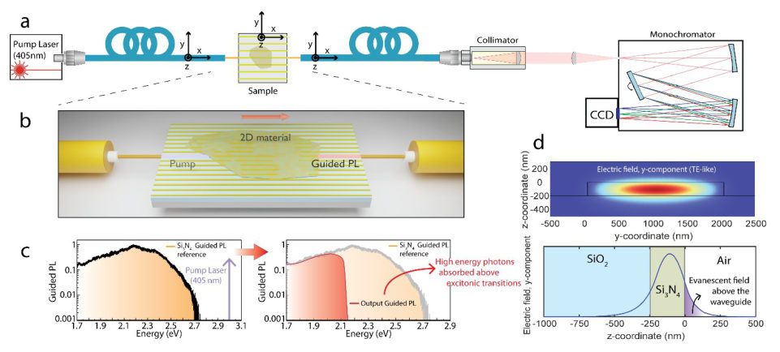
<figcaption class="paper-figure-caption"><b>Fig 1.</b> Figure 1. Evanescent absorption spectroscopy of a 2D material integrated on a dielectric</figcaption>
</figure>
<figure class="paper-figure-card">

<figcaption class="paper-figure-caption"><b>Fig 2.</b> Figure 2. Optical and Raman characterization of the TMD-covered waveguides. (a–c) Optical</figcaption>
</figure>
<figure class="paper-figure-card">

<figcaption class="paper-figure-caption"><b>Fig 3.</b> Figure 3. Evanescent absorption and guided photoluminescence of Si₃N₄ waveguides covered by</figcaption>
</figure>
</div>

<p><strong>Summary.</strong> The authors developed a novel, source-free technique to measure the optical absorption of 2D TMD materials integrated into $   ext{Si}_3   ext{N}_4$ photonic waveguides. By monitoring how the waveguide's internal photoluminescence is spectrally attenuated by the overlying flake, they achieve an accurate, in situ measurement of excitonic absorption. This method is crucial for designing next-generation, high-performance on-chip optoelectronic devices.</p>
<p><strong>Why it may be interesting.</strong> This work provides a highly relevant experimental methodology for quantum optics and open quantum systems research by characterizing material loss mechanisms (absorption) in solid-state devices that are critical for coupling light to quantum emitters or qubits.</p>
<details>
<summary>Detailed structure</summary>
<p><strong>Main problem.</strong> The primary goal is to characterize the optical absorption of 2D transition metal dichalcogenides (TMDs) in their operational, integrated environment.</p>
<p><strong>Main result.</strong> The study successfully demonstrates a source-free, on-chip spectroscopy technique that accurately measures energy-dependent TMD absorption by monitoring spectral attenuation of guided photoluminescence.</p>
<p><strong>Method.</strong> Evanescent absorption spectroscopy is performed by using the intrinsic defect-related photoluminescence from the $  ext{Si}_3   ext{N}_4$ waveguide core as an internal probe source, which is then attenuated by the overlying TMD flake.</p>
<p><strong>Model / system.</strong> The system involves integrating TMD flakes ($   ext{MoS}_2$, $  ext{WS}_2$) onto a silicon nitride ($   ext{Si}_3   ext{N}_4$) photonic waveguide. The measurement probes the interaction between the guided optical mode and the material's excitonic transitions.</p>
<p><strong>Key observables.</strong> Energy-dependent absorption spectrum ($    ext{dB/cm}$), local photoluminescence ($\mu$-PL) spectra, and spectral reshaping of propagating PL.</p>
<p><strong>Important parameters / regimes.</strong> Exciton binding energies (e.g., $\sim 1.83 	ext{ eV}$ for uniform $  ext{MoS}_2$), attenuation coefficients ($\alpha$ in $  ext{dB/cm}$), and flake coverage length ($L$).</p>
<p><strong>Assumptions / limitations.</strong> The measurement assumes the broadband defect-related PL dominates the signal, allowing normalization against a reference waveguide; furthermore, near resonances, reported attenuation values are conservative lower bounds.</p>
<p><strong>Figures summary.</strong> Figures compare guided PL vs. local $\mu$-PL spectra, show extracted attenuation profiles, and illustrate the setup for both source-free spectroscopy and top-pumping excitation geometry.</p>
<p><strong>Paper structure.</strong> The paper establishes the need for in situ characterization, details the source-free evanescent absorption method using internal PL, validates this technique by comparing results to local $\mu$-PL and Raman data, and concludes by positioning the platform for future photodetector development.</p>
</details>
<details>
<summary>Abstract</summary>
<p>On-chip integration of two-dimensional transition metal dichalcogenides (TMDs) with photonic waveguides underpins a growing class of compact optoelectronic and sensing devices, whose performance depends on the optical absorption of the 2D material in this integrated environment. We demonstrate source-free, on-chip evanescent absorption spectroscopy of MoS$_2$ and WS$_2$ flakes integrated on Si$_3$N$_4$ waveguides, in which the broadband defect-related photoluminescence of the Si$_3$N$_4$ core itself acts as the internal probe. Light generated inside the core propagates under the TMD flake and is spectrally attenuated by evanescent interaction with the 2D material, and normalizing the transmitted spectrum to a reference waveguide without TMD yields the energy-dependent absorption response without any external illumination. The extracted guided absorption agrees with Raman and local micro-photoluminescence characterization and resolves differences between spatially uniform and non-uniform flakes. A complementary top-pumping scheme recovers guided WS$_2$ photoluminescence, whose spectral reshaping during propagation is quantitatively reproduced by the measured absorption. This source-free platform qualifies 2D materials in their integrated photonic environment and provides a direct route toward waveguide-integrated TMD photodetectors and sensors.</p>
</details>
<p><sub><a href="#top">↑ back to top</a></sub></p>

<p><a id="paper-2607.00104"></a></p>
<h3 id="an-analog-ac-voltage-amplifier-based-on-a-single-straintronic-magnetic-tunnel-junction"><a href="http://arxiv.org/abs/2607.00104v1">An analog ac voltage amplifier based on a single straintronic magnetic tunnel junction</a></h3>
<p><strong>Authors:</strong> Cael Johnson, Rahnuma Rahman, Supriyo Bandyopadhyay<br>
<strong>Type:</strong> theory · <strong>Category:</strong> other · <strong>PDF:</strong> <a href="https://arxiv.org/pdf/2607.00104v1">https://arxiv.org/pdf/2607.00104v1</a><br>
<strong>Analysis basis:</strong> full PDF text, analyzed in chunks
<strong>Topic relevance:</strong> <code>spintronics-quantum-optics interface</code> <strong>3/5</strong> · <code>driven-dissipative phase transition</code> <strong>2/5</strong> · <code>methods for driven-dissipative</code> <strong>2/5</strong> · <code>non-equilibrium dynamics</code> <strong>2/5</strong> · <code>Keldysh / 2PI / non-Gaussian methods</code> <strong>1/5</strong> · <code>Kondo &amp; dissipative impurity</code> <strong>1/5</strong> · <code>analog quantum simulation</code> <strong>1/5</strong> · <code>exotic spin models in light-matter</code> <strong>1/5</strong> · <code>non-equilibrium universality</code> <strong>1/5</strong></p>
<div class="figure-strip-hint">↔ Scroll figures horizontally</div>
<div class="paper-figures-scroll">
<figure class="paper-figure-card">

<figcaption class="paper-figure-caption"><b>Fig 1.</b> Fig. 1. The structure of a straintronic magnetic tunnel junction. Reprinted from [8], with the permission of AIP Publishing.</figcaption>
</figure>
<figure class="paper-figure-card">

<figcaption class="paper-figure-caption"><b>Fig 2.</b> Fig. 2. The computed Gs−MT J versus VG transfer characteristic of a s-MTJ at room temperature. The linear region is shaded in gray. Within this region, the characteristic follows Equation (1). The values of κ and δ for this MTJ are shown. ©2022 IEEE. Reprinted with permission from [6].</figcaption>
</figure>
<figure class="paper-figure-card">
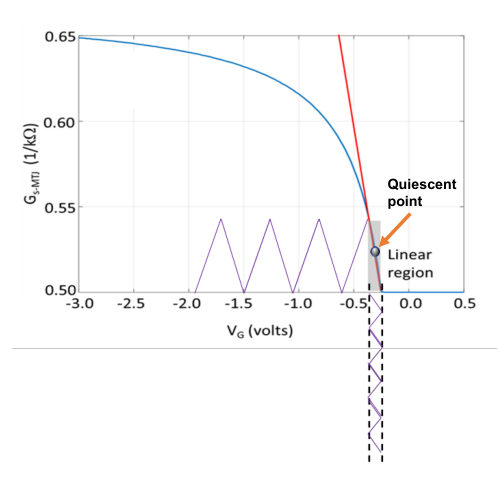
<figcaption class="paper-figure-caption"><b>Fig 3.</b> Fig. 3. A swing of the gate voltage around the quiescent point results in a corresponding swing of the s-MTJ conductance. The waveform shown here is triangular but the principle holds for any arbitrary waveform. The gate voltage swing has to be small enough to stay within the linear region.</figcaption>
</figure>
<figure class="paper-figure-card">
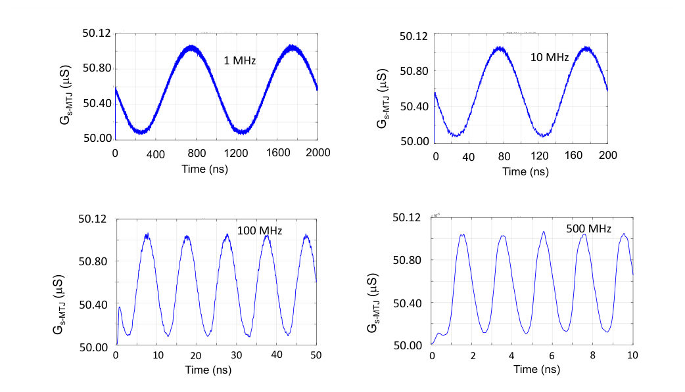
<figcaption class="paper-figure-caption"><b>Fig 4.</b> Fig. 4. Time variation of the s-MTJ conductance in the presence of a dc + ac gate voltage at different frequencies. The dc voltage was -0.26 V and the ac voltage amplitude was 10 mV to ensure that the gate voltage excursion always remains within the linear region of the transfer characteristic.</figcaption>
</figure>
<figure class="paper-figure-card">

<figcaption class="paper-figure-caption"><b>Fig 5.</b> Fig. 5. The ac amplifier circuit realized with a single s-MTJ.</figcaption>
</figure>
</div>

<p><strong>Summary.</strong> This paper proposes using straintronic magnetic tunnel junctions (s-MTJs) as a tunable analog AC voltage amplifier. The device's conductance is controlled by strain via an applied gate voltage, allowing for linear operation in specific regimes. The key finding is that the amplification gain can be externally tuned by adjusting the bias supply voltage.</p>
<p><strong>Why it may be interesting.</strong> While primarily condensed matter/spintronics, the analysis of non-linear dynamic response (magnetization precession) to small signals, coupled with external circuit tuning, touches upon concepts relevant to open quantum systems and sensing mechanisms.</p>
<details>
<summary>Detailed structure</summary>
<p><strong>Main problem.</strong> To demonstrate and analyze the potential of straintronic magnetic tunnel junctions (s-MTJs) as a novel analog AC voltage amplifier.</p>
<p><strong>Main result.</strong> The s-MTJ can function as an analog amplifier whose gain is tunable by an external supply voltage, unlike traditional transistor amplifiers.</p>
<p><strong>Method.</strong> Theoretical modeling involving the Landau–Lifshitz-Gilbert-Langevin (LLGL) equations to analyze magnetization dynamics under superimposed AC gate voltages.</p>
<p><strong>Model / system.</strong> The physical system is a straintronic Magnetic Tunnel Junction (s-MTJ), whose conductance is continuously modulated by mechanical strain induced via an external gate voltage ($V_G$).</p>
<p><strong>Key observables.</strong> Amplification factor ($    ilde{V}$ proportional to $v_g$), conductance swing, and the maximum allowed input signal amplitude before distortion.</p>
<p><strong>Important parameters / regimes.</strong> The amplification factor is proportional to the supply voltage ($V_s$); operating frequency is limited by magnetization dynamics (GHz range).</p>
<p><strong>Assumptions / limitations.</strong> The analysis assumes that the AC gate voltage excursion remains within the analytically derived linear region of the s-MTJ's transfer characteristic.</p>
<p><strong>Figures summary.</strong> Figures illustrate the s-MTJ structure, its conductance vs. $V_G$ transfer curve highlighting linearity, and time-domain simulations showing signal amplification and frequency limitations.</p>
<p><strong>Paper structure.</strong> The paper introduces the s-MTJ as an analog platform, derives the linear conductance dependence on $V_G$, models the AC voltage amplification using LLGL dynamics, and discusses tunability and operational limits.</p>
</details>
<details>
<summary>Abstract</summary>
<p>Magnetic tunnel junctions (MTJs) are known for their digital applications (memory and logic). A special class of them called "straintronic" magnetic tunnel junctions (s-MTJ) has lately emerged as a potential platform for analog applications because their conductance can be varied continuously with mechanical strain generated with a gate voltage. The conductance versus gate voltage (transfer) characteristic always has a linear region and that can be leveraged for a variety of analog applications. Here, we discuss one such application, namely analog voltage amplification. If the s-MTJ's gate voltage is fixed around the midpoint of the linear region and a small ac voltage is superimposed on it, then the ac voltage can be amplified without distortion as long as its amplitude is small enough to avoid gate voltage excursion beyond the linear region. Unlike a transistor-based voltage amplifier whose amplification is determined solely by the transistor's internal parameters - namely the transconductance and Early resistance - here the amplification can be varied by an external power supply voltage. We examine the maximum allowed amplitude and frequency of input signal for distortion-free amplification by modeling the magnetization dynamics and derive an expression for the amplification.</p>
</details>
<p><sub><a href="#top">↑ back to top</a></sub></p>

<p><a id="paper-2607.00396"></a></p>
<h3 id="modulation-of-anomalous-hall-angle-in-a-magnetic-topological-semimetal"><a href="http://arxiv.org/abs/2607.00396v1">Modulation of anomalous Hall angle in a magnetic topological semimetal</a></h3>
<p><strong>Authors:</strong> Jinying Yang, Yanxing Shang, Xingchen Liu, Yibo Wang, Xuebin Dong, Qingqi Zeng, Meng Lv, Shen Zhang, Yang Liu, Binbin Wang, Hongxiang Wei, Yizheng Wu, Stuart Parkin, Gangqin Liu, Claudia Felser, Enke Liu, Baogen Shen<br>
<strong>Type:</strong> experiment · <strong>Category:</strong> other · <strong>PDF:</strong> <a href="https://arxiv.org/pdf/2607.00396v1">https://arxiv.org/pdf/2607.00396v1</a><br>
<strong>Analysis basis:</strong> full PDF text, analyzed in chunks
<strong>Topic relevance:</strong> <code>exotic spin models in light-matter</code> <strong>3/5</strong> · <code>spintronics-quantum-optics interface</code> <strong>3/5</strong> · <code>driven-dissipative phase transition</code> <strong>2/5</strong> · <code>Keldysh / 2PI / non-Gaussian methods</code> <strong>1/5</strong> · <code>Kondo &amp; dissipative impurity</code> <strong>1/5</strong> · <code>analog quantum simulation</code> <strong>1/5</strong> · <code>methods for driven-dissipative</code> <strong>1/5</strong> · <code>non-equilibrium dynamics</code> <strong>1/5</strong> · <code>non-equilibrium universality</code> <strong>1/5</strong></p>
<div class="figure-strip-hint">↔ Scroll figures horizontally</div>
<div class="paper-figures-scroll">
<figure class="paper-figure-card">

<figcaption class="paper-figure-caption"><b>Fig 1.</b> Low-resolution page preview, page 2</figcaption>
</figure>
<figure class="paper-figure-card">

<figcaption class="paper-figure-caption"><b>Fig 2.</b> Low-resolution page preview, page 3</figcaption>
</figure>
<figure class="paper-figure-card">
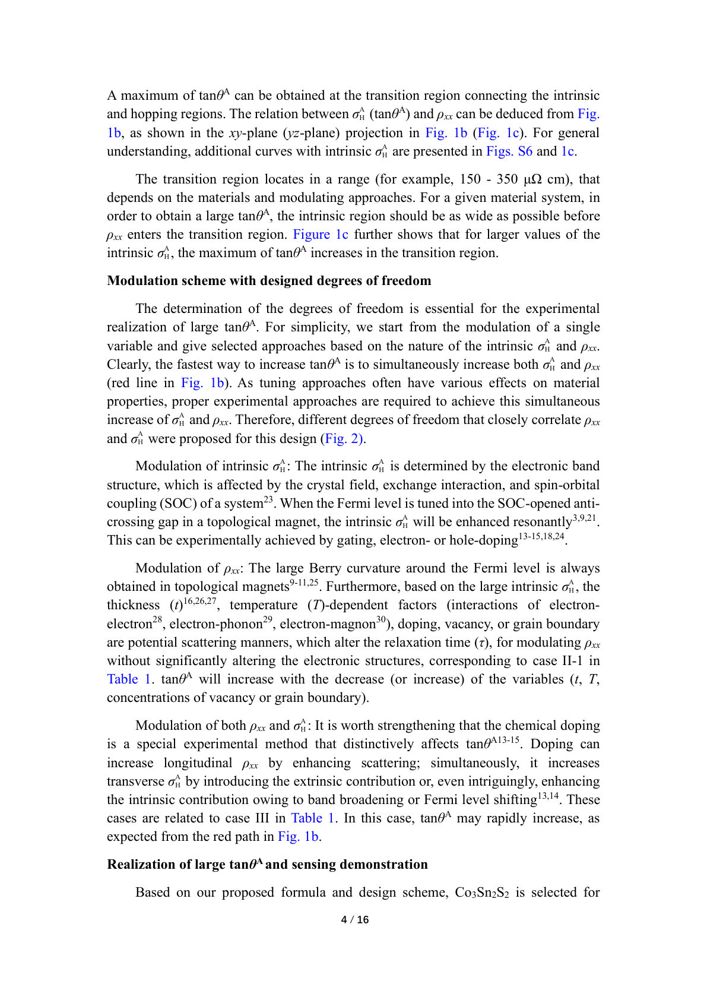
<figcaption class="paper-figure-caption"><b>Fig 3.</b> Low-resolution page preview, page 4</figcaption>
</figure>
<figure class="paper-figure-card">

<figcaption class="paper-figure-caption"><b>Fig 4.</b> Low-resolution page preview, page 5</figcaption>
</figure>
<figure class="paper-figure-card">

<figcaption class="paper-figure-caption"><b>Fig 5.</b> Low-resolution page preview, page 6</figcaption>
</figure>
</div>

<p><strong>Summary.</strong> This work reports on methods to significantly enhance the anomalous Hall angle ($  heta_A$) in the magnetic Weyl semimetal $   ext{Co}_3   ext{Sn}_2   ext{S}_2$. By manipulating the material's resistivity and anomalous Hall conductivity through doping or temperature changes, they achieved a large, tunable $   an  heta_A$ of up to 0.46. This breakthrough enables the fabrication of highly sensitive magnetic field detectors for spintronic applications.</p>
<p><strong>Why it may be interesting.</strong> While primarily condensed matter physics, the precise control over electronic transport coefficients in topological materials using external stimuli (doping, temperature) is relevant to understanding engineered quantum states and boundary effects that underpin many advanced quantum devices.</p>
<details>
<summary>Detailed structure</summary>
<p><strong>Main problem.</strong> The primary goal is to enhance the sensitivity of anomalous Hall sensors by modulating the anomalous Hall angle ($    heta_A$), which measures current conversion efficiency.</p>
<p><strong>Main result.</strong> The authors successfully demonstrated modulation of $  an  heta_A$ up to a magnitude of 0.46 (an angle of $\approx 25^\circ$) in the magnetic Weyl semimetal $   ext{Co}_3   ext{Sn}_2   ext{S}_2$.</p>
<p><strong>Method.</strong> The modulation is achieved by controlling the relationship between anomalous Hall conductivity ($\sigma_{AH}$) and longitudinal resistivity ($
ho_{xx}$), using techniques like chemical doping or temperature variation.</p>
<p><strong>Model / system.</strong> The study focuses on $  ext{Co}<em xx>3   ext{Sn}_2   ext{S}_2$, a magnetic topological semimetal. The theoretical framework relates $    an  heta_A$ to the product of $
ho</em>$ and $\sigma_{AH}$, allowing for systematic tuning via doping or structural changes.</p>
<p><strong>Key observables.</strong> Anomalous Hall angle ($    heta_A$), anomalous Hall conductivity ($\sigma_{AH}$), longitudinal resistivity ($
ho_{xx}$), and magnetic field detectability ($23.5 	ext{ nT}/	ext{Hz}^{0.5}$).</p>
<p><strong>Important parameters / regimes.</strong> The maximum modulation magnitude of $   an  heta_A$ (up to 0.46) is crucial, as it significantly surpasses the low angles typically found in magnetic materials.</p>
<p><strong>Assumptions / limitations.</strong> The analysis assumes that independent control over both $
ho_{xx}$ and $\sigma_{AH}$ can be achieved through different experimental means (e.g., doping for one, temperature/thickness for the other).</p>
<p><strong>Figures summary.</strong> Figures illustrate the dependence of $ an  heta_A$ on varying parameters like temperature or thickness, demonstrating how increasing $
ho_{xx}$ and $\sigma_{AH}$ simultaneously enhances the angle.</p>
<p><strong>Paper structure.</strong> The paper establishes the physical problem (enhancing AHE sensitivity), develops a theoretical formulation linking $   an  heta_A$ to transport coefficients ($\sigma_{AH}, 
ho_{xx}$), presents experimental evidence showing modulation via doping/temperature, and concludes with high-performance sensor metrics.</p>
</details>
<details>
<summary>Abstract</summary>
<p>The anomalous Hall angle (θA) is a measure of the efficiency of converting a longitudinal driving current to a transverse spin-polarized Hall current. For anomalous Hall sensing, a large anomalous Hall angle can improve the sensitivity of magnetic field detection. However, modulation of this angle is challenging and magnetic materials typically have low angles of 0.1 to 3°. Here, we report modulation of the anomalous Hall angle in the magnetic Weyl semimetal Co3Sn2S2. We propose that the angle parameter tanθA can be formulated as a function of the product of electrical resistivity and anomalous Hall conductivity. Our scheme was utilized to demonstrate the modulation of tanθA up to a magnitude of 0.46, corresponding to an angle of around 25°. Microfabricated anomalous Hall devices using Fe-doped Co3Sn2S2 single-crystalline nanoflakes exhibit a high Hall sensitivity of 7028 μΩucm/T and a magnetic field detectability of 23.5 nT/Hz0.5 at 1 Hz.</p>
</details>
<p><sub><a href="#top">↑ back to top</a></sub></p>

<p><a id="paper-2607.00807"></a></p>
<h3 id="electrical-control-of-spin-photocurrent-in-a-magnetoelectric-oxide-crmath1094mathomath1095math"><a href="http://arxiv.org/abs/2607.00807v1">Electrical control of spin photocurrent in a magnetoelectric oxide Cr$_2$O$_3$</a></h3>
<p><strong>Authors:</strong> Zhuo-Cheng Gu, Hiroaki Ishizuka<br>
<strong>Type:</strong> theory · <strong>Category:</strong> other · <strong>PDF:</strong> <a href="https://arxiv.org/pdf/2607.00807v1">https://arxiv.org/pdf/2607.00807v1</a><br>
<strong>Analysis basis:</strong> full PDF text, analyzed in chunks
<strong>Topic relevance:</strong> <code>exotic spin models in light-matter</code> <strong>3/5</strong> · <code>spintronics-quantum-optics interface</code> <strong>3/5</strong> · <code>non-equilibrium dynamics</code> <strong>2/5</strong> · <code>Keldysh / 2PI / non-Gaussian methods</code> <strong>1/5</strong> · <code>analog quantum simulation</code> <strong>1/5</strong> · <code>driven-dissipative phase transition</code> <strong>1/5</strong> · <code>methods for driven-dissipative</code> <strong>1/5</strong></p>
<div class="figure-strip-hint">↔ Scroll figures horizontally</div>
<div class="paper-figures-scroll">
<figure class="paper-figure-card">
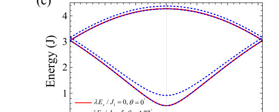
<figcaption class="paper-figure-caption"><b>Fig 1.</b> FIG. 1. A schematic of the spin chain with spin canting and its magnon dispersion. (a) A noncentrosymmetric quasi-one- dimensional model composed of weakly coupled spin chains with the nearest-neighbor interactions, J1 and J5, and a dis- placement δ. (b) A schematic of the spin chain studied in Sec. III. The numbers u = 1–4 on each site denote the sublat- tice, θ is the angle of canting induced by the DMI, and (x, y, z) and (x0, y0, z0) are the global and local coordinates, respec- tively. (c) Magnon dispersion of the spin chain for Ex = 0 and Ex = 5 (θ = 4.77◦) with λ = 0.05. The results are for J1 = −1, J5 = −0.5, Dz = 0.005, and δ = 0.1.</figcaption>
</figure>
<figure class="paper-figure-card">
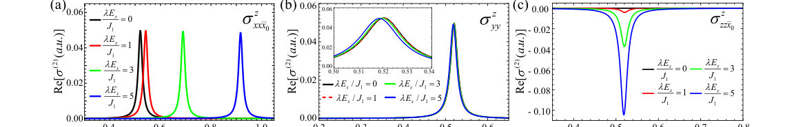
<figcaption class="paper-figure-caption"><b>Fig 2.</b> FIG. 2. Nonlinear spin current conductivity for Sz through the one-magnon process along the α (α = x0, y0, z0) direction under a static electric field Ex. Frequency dependence of (a) [σ(2)]z xx¯x0, (b) [σ(2)]z yy, and (c) [σ(2)]z zz¯x0. The results are obtained for J1 = −1, J5 = −0.5, Dz = 0.005, δ = 0.1, η = ω1(k = 0, E = 0) ≈0.01, and λ = 0.05. The canting angles corresponding to λEx/J1 = 1, 3, and 5 are θ = 0.95◦, 2.86◦, and 4.77◦, respectively.</figcaption>
</figure>
<figure class="paper-figure-card">

<figcaption class="paper-figure-caption"><b>Fig 3.</b> FIG. 3. Nonlinear spin current conductivity for the 1D model in Eq. 20 induced by the two-magnon process; (a) σz xx¯z0 and (b) σz zz¯z0. Each line is the conductivity with different electric fields E = 1(red), 3 (green), and 5 (blue). The canting angles corresponding to λEx/J1 = 1, 3, and 5 are θ = 0.95◦, 2.86◦, and 4.77◦, respectively. Frequency dependence of the spin conductivity for J1 = −1, J5 = −0.5, Dz = 0.005, δ = 0.1, λ = 0.05, and η = ω1(k = 0, E = 0) ≈0.01.</figcaption>
</figure>
<figure class="paper-figure-card">
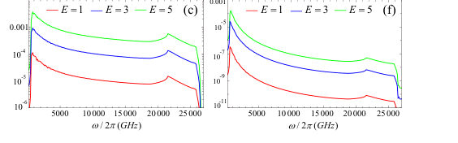
<figcaption class="paper-figure-caption"><b>Fig 4.</b> FIG. 5. Nonlinear spin current conductivities σz xx(0; ω, −ω) and σz zz(0; ω, −ω). (a) Frequency dependence of [σ(2)]z xxand its (b) one-magnon and (c) two-magnon contributions. (d) Frequency dependence of [σ(2)]z zz and (e) the one-magnon and (f) the two-magnon processes. The canting angle θ for E = 1, 3, and 5 are θ = 0.09◦, 0.24◦, and 0.39◦, respectively. The results are for Gilbert damping α = 0.02, J1 = −7.53 meV, J2 = −3.41 meV, J3 = −0.08 meV, J4 = 0.02 meV, J5 = −0.19 meV, Dz = 0.0015 meV, η = 0.02E1(k = 0) meV, and λ = 0.05. The unit of product λE is energy scale (meV).</figcaption>
</figure>
<figure class="paper-figure-card">
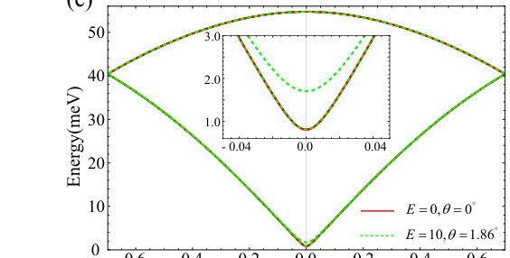
<figcaption class="paper-figure-caption"><b>Fig 5.</b> FIG. 4. The crystal structure and magnon dispersion of Cr2O3. (a) The lattice structure viewed from the z axis. The A, B, and C chains correspond to the respective chains in (a). The dashed rhombus shows the unit cell of Cr2O3. (b) A schematic of the crystal structure and exchange interactions J1-J5 viewed from the y axis. Numbers in the parentheses indicate the number of bonds. (c) Magnon dispersion for the model in Eq. (28) with E = 0 (red) and E = 10 (dashed green), where the unit of the product λE is meV and λ = 0.05. The results are for J1 = −7.53 meV, J2 = −3.41 meV, J3 = −0.08 meV, J4 = 0.02 meV, J5 = −0.19 meV [19], and Dz = 0.0015 meV [26, 27]. Enlarged views of the lower magnon...</figcaption>
</figure>
</div>

<p><strong>Summary.</strong> The paper theoretically investigates the electrical control of magnon spin photocurrent in the magnetoelectric oxide $ ext{Cr}_2   ext{O}_3$. Using nonlinear response theory, the authors show that an applied electric field modifies the spin current conductivity via the Dzyaloshinskii–Moriya interaction. The results confirm that this material is a promising platform for electrically tunable optospintronic devices.</p>
<p><strong>Why it may be interesting.</strong> This work bridges concepts from spintronics (spin currents), multiferroics (magnetoelectric coupling), and advanced many-body theory (nonlinear response/bosonic excitations), providing a theoretical framework for electrically controlling quantum magnetic responses.</p>
<details>
<summary>Detailed structure</summary>
<p><strong>Main problem.</strong> The study investigates how an applied electric field can electrically control the magnon spin photocurrent generated in magnetoelectric oxides.</p>
<p><strong>Main result.</strong> The research demonstrates that the Dzyaloshinskii–Moriya interaction, induced by the electric field, significantly modifies the spin-current conductivity, confirming electrical tunability of this effect.</p>
<p><strong>Method.</strong> Nonlinear response theory is employed to calculate the second-order nonlinear spin current conductivity ($\sigma^{(2)}$), decomposing it into one-magnon and two-magnon contributions.</p>
<p><strong>Model / system.</strong> The physical system studied is $    ext{Cr}_2   ext{O}_3$, modeled using 1D and 3D spin chain Hamiltonians that incorporate nearest-neighbor exchange, Dzyaloshinskii–Moriya interaction (DMI), and anisotropy terms.</p>
<p><strong>Key observables.</strong> Nonlinear spin current conductivity ($\sigma^{(2)}$) components for different polarizations ($z_{xx}, z_{yy}$, etc.), resonance frequencies, and continuum spectrum features.</p>
<p><strong>Important parameters / regimes.</strong> Applied electric field ($E$), magnon frequency ($\Omega$), temperature (analyzed at $T=0$ in some parts), and exchange coupling constants ($J$).</p>
<p><strong>Assumptions / limitations.</strong> The analysis relies on the linear spin-wave approximation for the magnon Hamiltonian, and certain calculations assume zero temperature or slow variation of matrix elements near resonance.</p>
<p><strong>Figures summary.</strong> Figures illustrate schematic models of spin chains with canting (Fig. 1), show $\sigma^{(2)}$ spectra for one-magnon and two-magnon processes in 1D (Fig. 2, Fig. 3), and present the magnon dispersion relations for $  ext{Cr}_2   ext{O}_3$ (Fig. 4).</p>
<p><strong>Paper structure.</strong> The paper builds from general theory using nonlinear response formalism to specific calculations on 1D and 3D spin models, analyzing both one-magnon resonance peaks and the two-magnon continuum spectrum as functions of the external electric field.</p>
</details>
<details>
<summary>Abstract</summary>
<p>Controlling magnetism by electric field or current is a central topic in spintronics. In this work, we argue that the magnon spin photocurrent can also be controlled by the electric field in magnetoelectrics. Taking Cr$_2$O$_3$ as an example, we demonstrate how the spin current is modified by the electric field, using nonlinear response theory. We find that the Dzyaloshinsky--Moriya interaction induced by the applied field plays a key role in modifying spin-current conductivity, which exhibits pronounced anisotropy with respect to the light polarization. In particular, both the resonance frequency and the peak intensity show distinct dependences on the external electric field $E$, demonstrating electrical control of the spin photocurrent. In addition, we show that the two-magnon processes give rise to a continuum spectrum, a consequence of the field-induced spin canting. These results show that Cr$_2$O$_3$ is a promising platform for realizing electrically tunable spin photovoltaic effect.</p>
</details>
<p><sub><a href="#top">↑ back to top</a></sub></p>

<p><a id="paper-2607.00506"></a></p>
<h3 id="atom-selective-spin-polarized-transport-in-a-charge-ordered-altermagnet"><a href="http://arxiv.org/abs/2607.00506v1">Atom-selective spin-polarized transport in a charge-ordered altermagnet</a></h3>
<p><strong>Authors:</strong> Liu Yang, Yuan-Yuan Jiang, Xiao-Yan Guo, Yi-Dong Liu, Xian-Zhe Chen, Wen-Jian Lu, Yu-Ping Sun, Ming Li, Ding-Fu Shao<br>
<strong>Type:</strong> theory · <strong>Category:</strong> other · <strong>PDF:</strong> <a href="https://arxiv.org/pdf/2607.00506v1">https://arxiv.org/pdf/2607.00506v1</a><br>
<strong>Analysis basis:</strong> full PDF text, analyzed in chunks
<strong>Topic relevance:</strong> <code>spintronics-quantum-optics interface</code> <strong>3/5</strong> · <code>Keldysh / 2PI / non-Gaussian methods</code> <strong>2/5</strong> · <code>methods for driven-dissipative</code> <strong>2/5</strong> · <code>Kondo &amp; dissipative impurity</code> <strong>1/5</strong> · <code>analog quantum simulation</code> <strong>1/5</strong> · <code>exotic spin models in light-matter</code> <strong>1/5</strong> · <code>non-equilibrium dynamics</code> <strong>1/5</strong></p>
<div class="figure-strip-hint">↔ Scroll figures horizontally</div>
<div class="paper-figures-scroll">
<figure class="paper-figure-card">
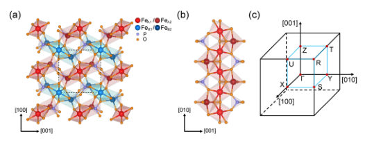
<figcaption class="paper-figure-caption"><b>Fig 1.</b> Fig. 1: (a,b) The crystal structures of α-Fe2PO5 with the coordination polyhedra around Fe emphasized in (a) top view and (b) side view of FeAO6 octahedra. The dashed black lines indicate the unit cell. (c) The first Brillouin zone of α-Fe2PO5.</figcaption>
</figure>
<figure class="paper-figure-card">

<figcaption class="paper-figure-caption"><b>Fig 2.</b> Fig. 2: (a) The band structure of α-Fe2PO5. (b) The en-larged band structure along the Γ-U high-symmetry path. (c) The FeA-resolved density of states of contributed by the valence and conduction bands.</figcaption>
</figure>
<figure class="paper-figure-card">
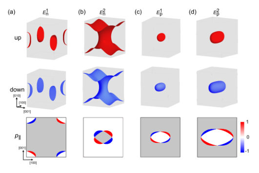
<figcaption class="paper-figure-caption"><b>Fig 3.</b> Fig. 3: (a-d) Three-dimensional constant-energy surfaces for spin-up and spin-down states at representative n- and p-doped energies and the ܓ∥-resolved spin polarization ݌∥(ܓ∥) for transport along the [010] direction. Gray regions denote momenta without available conducting channels, where ܰ∥</figcaption>
</figure>
<figure class="paper-figure-card">
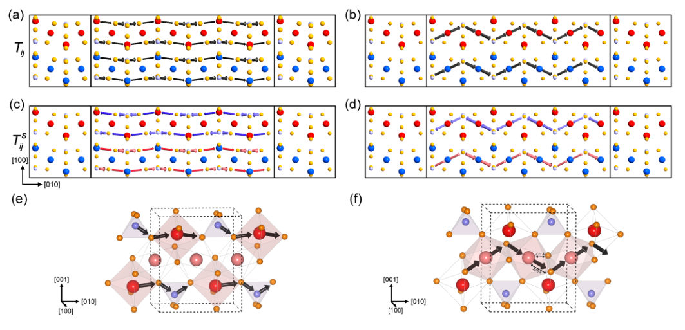
<figcaption class="paper-figure-caption"><b>Fig 4.</b> Fig. 4: Real-space bond-resolved transport in doped α-Fe2PO5. (a,b) Bond charge transmission ܶ௜௝ and (c,d) bond spin transmission ܶ௜௝</figcaption>
</figure>
<figure class="paper-figure-card">

<figcaption class="paper-figure-caption"><b>Fig 5.</b> Fig. 5: (a) Schematic of the proposed α-Fe2PO5 junction, consisting of left and right doped regions separated by a pristine insulating region. The labels ݊ଵ݊ଵ, ݊ଶ݊ଶ, ݌ଵ݌ଵ, and ݌ଶ݌ଶ denote junctions in which both electrodes are doped to the same representative electron- or hole-doped energies, ܧ௡</figcaption>
</figure>
</div>

<p><strong>Summary.</strong> This work analyzes spin-polarized transport in the altermagnet $\alpha$-Fe$_2$PO$_5$, demonstrating that charge ordering induces a real-space, atom-selective mechanism for spin current flow despite weak bulk magnetic splitting. By modeling an all-in-one tunnel junction, the authors show that controlling the atomic conduction channels—rather than just momentum overlap—allows for massive modulation of spin conductance.</p>
<p><strong>Why it may be interesting.</strong> While focused on solid-state magnetism, the concept of controlling quantum transport through engineered atomic connectivity and valence states has parallels with designing controlled coupling elements in superconducting or molecular quantum circuits.</p>
<details>
<summary>Detailed structure</summary>
<p><strong>Main problem.</strong> To investigate spin-polarized transport in altermagnets by moving beyond conventional momentum-space descriptions to focus on real-space electronic selectivity.</p>
<p><strong>Main result.</strong> The charge-ordered altermagnet $\alpha$-Fe$_2$PO$_5$ exhibits atom-selective spin-polarized transport, allowing for orders-of-magnitude conductance modulation in a tunnel junction based on matching or mismatching atomic conduction channels.</p>
<p><strong>Method.</strong> First-principles calculations (DFT) combined with quantum transport simulations using the Non-Equilibrium Green's Function (NEGF) formalism.</p>
<p><strong>Model / system.</strong> The physical system is $\alpha$-Fe$_2$PO$_5$, a charge-ordered altermagnet characterized by inequivalent Fe$^{2+}$ and Fe$^{3+}$ sites within its sublattices, which dictates the spin-selective transport pathways.</p>
<p><strong>Key observables.</strong> Spin-polarized current flow pathways, local conductance modulation ($\mathcal{T}_{ij}^{\sigma}$), and ON/OFF switching ratios in a tunnel junction.</p>
<p><strong>Important parameters / regimes.</strong> Weak altermagnetic spin splitting near $E_F$; doping energy ($E_{n}^s, E_{p}^s$); lattice structure details (puckered C-type stacking).</p>
<p><strong>Assumptions / limitations.</strong> The standard momentum-space description fails to capture the crucial role of local and atomically-resolved electronic states in determining transport.</p>
<p><strong>Figures summary.</strong> Figures illustrate crystal structures, band/DOS calculations showing site-resolved features, constant-energy surfaces confirming weak splitting, and real-space bond-resolved transmission ($\mathcal{T}_{ij}^{\sigma}$) for different doping configurations in a tunnel junction schematic.</p>
<p><strong>Paper structure.</strong> The paper progresses from establishing the limitations of momentum-space analysis to demonstrating atom-selective transport via site-specific channels (Fe$^{3+}$ vs Fe$^{2+}$) and culminates in proposing an all-in-one tunnel junction where real-space channel matching controls conductance modulation.</p>
</details>
<details>
<summary>Abstract</summary>
<p>Altermagnets provide a promising platform for spin-polarized transport without net magnetization, but their transport properties are usually discussed in terms of momentum-space spin splitting. Here, using first-principles calculations and quantum transport simulations, we show that the charge-ordered altermagnet $α$-Fe$_2$PO$_5$ exhibits a distinct form of real-space spin selectivity despite weak altermagnetic spin splitting near the Fermi level. The charge order creates inequivalent Fe$^{2+}$ and Fe$^{3+}$ sites within each sublattice, while the puckered C-type antiferromagnetic stacking suppresses inter-sublattice transport. As a result, electron and hole doping activate spin-polarized transport predominantly through Fe$^{3+}$- and Fe$^{2+}$-based channels, respectively. These atom-selective channels carry opposite spin polarizations on the two antiferromagnetic sublattices, giving rise to a globally compensated charge current with hidden Néel spin character. We further propose an all-in-one $α$-Fe$_2$PO$_5$ tunnel junction, where matching or mismatching atom-selective conduction channels yields orders-of-magnitude conductance modulation. Our findings establish a real-space design principle for atomically controlled spin functionality and spintronic devices.</p>
</details>
<p><sub><a href="#top">↑ back to top</a></sub></p>

<p><a id="paper-2607.01149"></a></p>
<h3 id="topological-hall-effect-due-to-electron-skyrmion-scattering"><a href="http://arxiv.org/abs/2607.01149v1">Topological Hall effect due to electron-skyrmion scattering</a></h3>
<p><strong>Authors:</strong> Arijit Mandal, Hareram Swain, B. R. K. Nanda, S. Satpathy<br>
<strong>Type:</strong> theory · <strong>Category:</strong> other · <strong>PDF:</strong> <a href="https://arxiv.org/pdf/2607.01149v1">https://arxiv.org/pdf/2607.01149v1</a><br>
<strong>Analysis basis:</strong> full PDF text, analyzed in chunks
<strong>Topic relevance:</strong> <code>Keldysh / 2PI / non-Gaussian methods</code> <strong>3/5</strong> · <code>methods for driven-dissipative</code> <strong>3/5</strong> · <code>spintronics-quantum-optics interface</code> <strong>3/5</strong> · <code>exotic spin models in light-matter</code> <strong>1/5</strong> · <code>non-equilibrium dynamics</code> <strong>1/5</strong></p>
<div class="figure-strip-hint">↔ Scroll figures horizontally</div>
<div class="paper-figures-scroll">
<figure class="paper-figure-card">
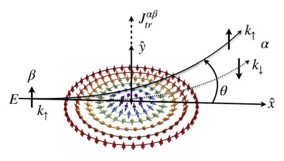
<figcaption class="paper-figure-caption"><b>Fig 1.</b> FIG. 1. Schematic diagram of scattering of a spin up elec- tron. The scattered wave consists of both a spin-preserved component and a spin-flip component with spin-dependent momentum kσ. The net transverse current is denoted by Jαβ tr , where β (α) is the spin of the incident (scattered) electron. For energy E &lt; J, even though there is no spin down incident or scattered beam, the spin down state can nevertheless exist in the skyrmion region, produced via the spin-flip potential, and can thereby influence the scattering process.</figcaption>
</figure>
<figure class="paper-figure-card">
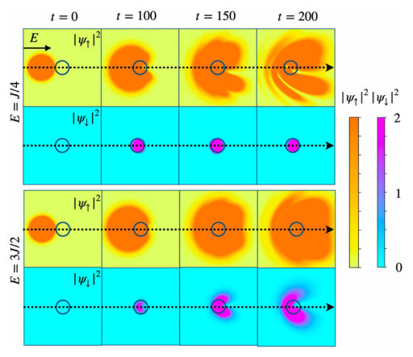
<figcaption class="paper-figure-caption"><b>Fig 2.</b> FIG. 2. Scattering dynamics of a spin-up Gaussian wavepacket from numerical solution of the time-dependent Schr¨odinger equation following the methods of Ref. [26]. The upper panel indicates the trapped spin-down state for E &lt; J, dynamically generated inside the skyrmion, indicated by the black circle, during the scattering process. In contrast, the lower panel, where E &gt; J, shows a small propagating spin down component after scattering, which will result in a spin- down current at r →∞. All figures are time snapshots of probability distribution |ψ|2 in both spin up and down chan- nels as indicated. The color coding, which is different for the two spin channels, indicates the magnitude of...</figcaption>
</figure>
<figure class="paper-figure-card">

<figcaption class="paper-figure-caption"><b>Fig 3.</b> FIG. 4. Scattering potential V (r) for the skyrmion corre- sponding to Eq. (15) plotted along the x axis. Here, λ is the skyrmion radius, and J is the exchange parameter. The spin up (down) electron experiences a spin-preserving repul- sive (attractive) potential together with a complex spin-flip scattering potential, whose magnitude |V↑↓| has been shown. There is no scattering potential outside |r| &gt; λ, and the ar- rows on the central line indicate the skyrmion spins.</figcaption>
</figure>
<figure class="paper-figure-card">
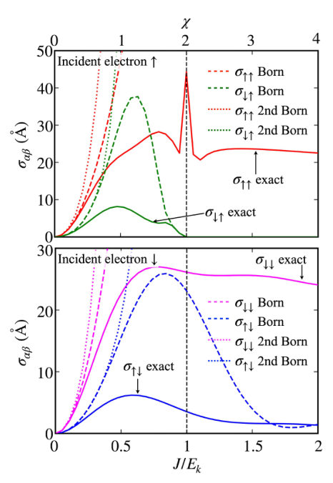
<figcaption class="paper-figure-caption"><b>Fig 4.</b> FIG. 3. Total scattering cross section σαβ for a skyrmion with winding number m = 1 as a function of the exchange energy J (the corresponding adiabatic parameter χ is shown on the top). Born approximation and exact results are shown for both spin up (top) and spin down (bottom) incoming elec- tron. The second Born approximation contains the three-spin scattering processes to the lowest order and hence the effect of chirality. However, the Born approximation results deviate quickly from the exact results as J is increased, necessitat- ing a full solution for typical solids. In the figure, the kinetic energy of the incident electron Ek = 4 eV and the skyrmion radius λ = 10 ˚A.</figcaption>
</figure>
<figure class="paper-figure-card">
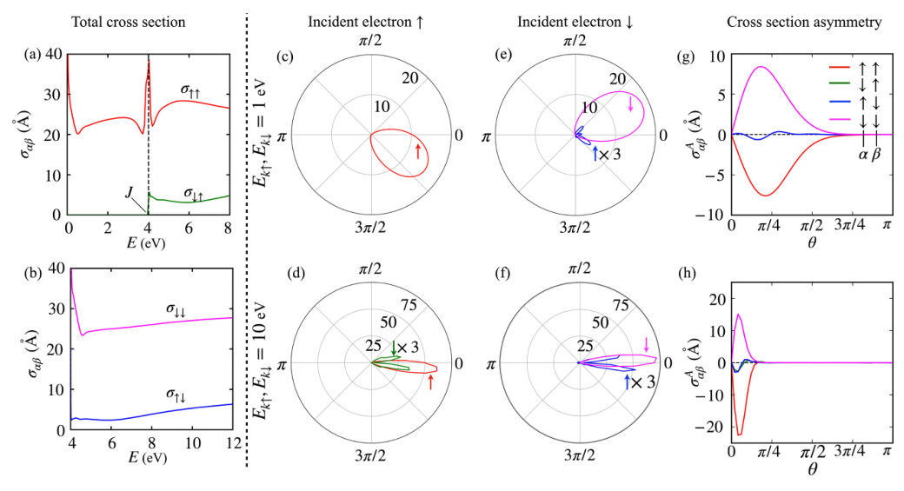
<figcaption class="paper-figure-caption"><b>Fig 5.</b> FIG. 5. Typical features of the scattering cross section. (a) Total scattering cross section σ↑↑/↓↑for incident spin-up electron. (b) Same for the spin-down electron, denoted by σ↑↓/↓↓. (c) Angular dependence of the differential scattering cross section for incident spin-up electrons with energy E = Ek↑= 1 eV. Since E &lt; J, there is no spin-down scattering component, as it cannot exist outside the skyrmion region. (d) The same for Ek↑&gt; J, but here scattering can occur to both spin channels. (e) and (f) Differential scattering cross section for spin-down incident electrons with two different energies. In this case, scattering is allowed to both spin channels for all energies. The spin-flip...</figcaption>
</figure>
</div>

<p><strong>Summary.</strong> This theoretical work analyzes how electrons scatter off skyrmion spin textures using an advanced Green's function formalism valid even in strong coupling. It predicts that this scattering generates distinct energy-dependent features like resonances and dips in the cross-section. These features are crucial for determining the material's topological and spin Hall conductivities.</p>
<p><strong>Why it may be interesting.</strong> The detailed quantum mechanical treatment of electron transport through emergent magnetic structures provides a rich platform for studying non-trivial topology in condensed matter systems, relevant to spintronics and topological materials.</p>
<details>
<summary>Detailed structure</summary>
<p><strong>Main problem.</strong> The study investigates electron scattering from chiral spin textures, such as skyrmions, focusing on regimes where the exchange interaction is strong relative to the electron energy.</p>
<p><strong>Main result.</strong> The full Green's function approach reveals new features in the scattering cross-section, including Ramsauer-Townsend minima and Landau-level resonances, which strongly influence the topological and spin Hall conductivities.</p>
<p><strong>Method.</strong> The problem is solved using the Lippmann-Schwinger equation and evaluating the full Green's function formalism, applicable across all coupling strengths.</p>
<p><strong>Model / system.</strong> It models itinerant electron scattering from a 2D skyrmion spin texture defined by $\hat{S}(r, 	heta)$. The Hamiltonian includes an exchange interaction term $J$ coupling to the electron spin ($oldsymbol{\sigma}$).</p>
<p><strong>Key observables.</strong> Topological Hall conductivity ($\sigma_H$), Spin Hall conductivity ($\sigma_{SH}$), and the scattering cross section ($\sigma_{\alphaeta}$).</p>
<p><strong>Important parameters / regimes.</strong> The ratio of exchange interaction strength ($J$) to electron energy ($E$); winding number ($m$).</p>
<p><strong>Assumptions / limitations.</strong> The formalism uses the full Green's function approach, avoiding approximations valid only in the weak-coupling limit.</p>
<p><strong>Figures summary.</strong> Figures illustrate scattering cross sections ($\sigma_{\alphaeta}$) vs. energy and coupling strength, showing resonances and dips; other figures map out spin-resolved transverse currents ($J_{\alphaeta}^{tr}$) across different energy regimes relative to $J$.</p>
<p><strong>Paper structure.</strong> The paper progresses from establishing the need for a strong-coupling formalism (Lippmann-Schwinger/GF) to calculating scattering cross sections ($\sigma_{\alphaeta}$), and finally deriving how these cross-sections determine the measurable topological and spin Hall conductivities across various energy regimes.</p>
</details>
<details>
<summary>Abstract</summary>
<p>Electron scattering from chiral spin textures such as skyrmions is fundamental to the understanding of transport in more complex systems, including skyrmion crystals. Most of the previous studies have focused on the weak-coupling regime, where the exchange interaction is small compared with the electron energy. Real materials, however, often lie in the strong-coupling regime, which exhibits qualitatively different behavior. Using the Lippmann-Schwinger equation and Green's function formalism, valid for all coupling strengths, we uncover several new features in the scattering cross section, including Ramsauer-Townsend minima, pronounced intermediate-coupling resonances, and Landau-level resonances for skyrmions with larger winding numbers. These features strongly influence the topological and spin Hall conductivities, which depend sensitively on the incident electron energy. Our work provides important insights into the Hall transport in collective chiral spin textures such as the skyrmion crystal.</p>
</details>
<p><sub><a href="#top">↑ back to top</a></sub></p>

<p><a id="paper-2607.00914"></a></p>
<h3 id="imaging-superconducting-weak-spots-through-vortex-assisted-thz-near-field-photovoltage"><a href="http://arxiv.org/abs/2607.00914v1">Imaging superconducting weak spots through vortex-assisted THz near-field photovoltage</a></h3>
<p><strong>Authors:</strong> Sergio J. Salvía-Fernández, Ekaterina Khestanova, Zoe Velluire-Pellat, Leonardo R. Cadorim, Sergi Batlle-Porro, David A. Czaplewski, Johann Osmond, Sebastian Castilla, Adrian Bachtold, Milorad V. Milošević, Aharon Kapitulnik, Frank H. L. Koppens<br>
<strong>Type:</strong> experiment · <strong>Category:</strong> other · <strong>PDF:</strong> <a href="https://arxiv.org/pdf/2607.00914v1">https://arxiv.org/pdf/2607.00914v1</a><br>
<strong>Analysis basis:</strong> full PDF text, analyzed in chunks
<strong>Topic relevance:</strong> <code>spintronics-quantum-optics interface</code> <strong>3/5</strong> · <code>driven-dissipative phase transition</code> <strong>2/5</strong> · <code>Kondo &amp; dissipative impurity</code> <strong>1/5</strong> · <code>methods for driven-dissipative</code> <strong>1/5</strong> · <code>non-equilibrium dynamics</code> <strong>1/5</strong> · <code>quantum measurements</code> <strong>1/5</strong></p>
<div class="figure-strip-hint">↔ Scroll figures horizontally</div>
<div class="paper-figures-scroll">
<figure class="paper-figure-card">
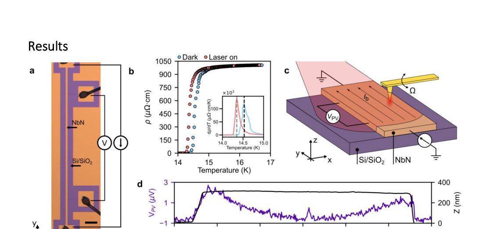
<figcaption class="paper-figure-caption"><b>Fig 1.</b> Fig. 1. Electron transport and near-field photovoltage profiling under THz illumination. a Microscope image of the device (scale bar 150 µm). Orange regions correspond to the NbN film, purple corresponds to the Si/SiO2 substrate. b Device resistivity, 𝜌, as a function of temperature measured in the dark and under continuous-wave 2.52 THz illumination with the laser power of 1.7 mW at the cryostat window. The inset shows the temperature derivative d𝜌/dT, with dashed lines marking the superconducting transition temperature (𝑇c) defined at the maximum of the derivative. c Schematic diagram of the THz near-field photovoltage experiment. d THz near-field photovoltage (purple line) and AFM...</figcaption>
</figure>
<figure class="paper-figure-card">
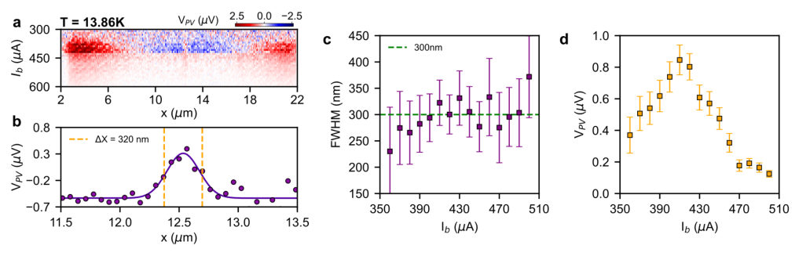
<figcaption class="paper-figure-caption"><b>Fig 2.</b> Fig. 2. Local peak in the near-field photovoltage at 𝑻 = 𝟏𝟑. 𝟖𝟔 𝐊. a Current-space near-field photovoltage map measured at 𝑇 = 13.86 K. b Zoomed-in view of the 𝑉PV profile obtained by averaging the line scans from the map in (a) over the current range 𝐼b = [380, 420] µA, with a Gaussian fit to the photovoltage peak (solid purple line) found at 𝑥= 12.52 μm. Orange vertical dashed lines indicate the FWHM of the peak. c Current dependence of the FWHM of the peak extracted from the map in (a). d Current dependence of amplitude of the central peak extracted from the analysis of the map in panel (a).</figcaption>
</figure>
<figure class="paper-figure-card">
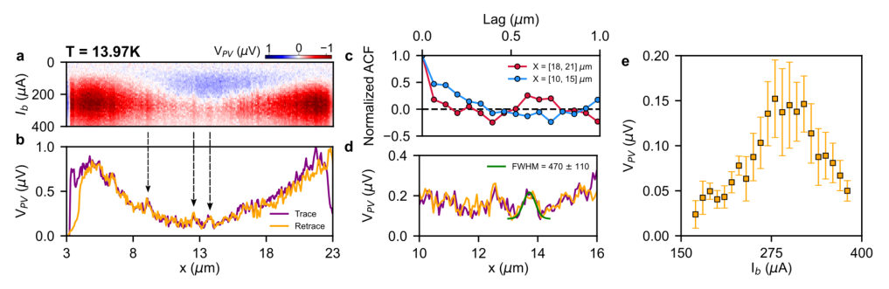
<figcaption class="paper-figure-caption"><b>Fig 3.</b> Fig. 3. Multiple local near-field photovoltage peaks at 𝑻 = 𝟏𝟑. 𝟗𝟕 𝐊. a Current-space near-field photovoltage map measured at 𝑇 = 13.97 K (full map shown in Fig. S6). b Horizontal 𝑉PV profiles (trace and retrace) obtained by averaging the line scans from the map in panel (a) over the current range 𝐼b = [290, 350] µA. The trace and retrace profiles were shifted by 1 µm to account for hysteresis in the piezoelectric scanners. c Zoomed-in view of the trace and retrace 𝑉PV profiles shown in (b). The green line plots the Gaussian fit to the peak in the trace profile. d Normalized autocorrelation</figcaption>
</figure>
<figure class="paper-figure-card">
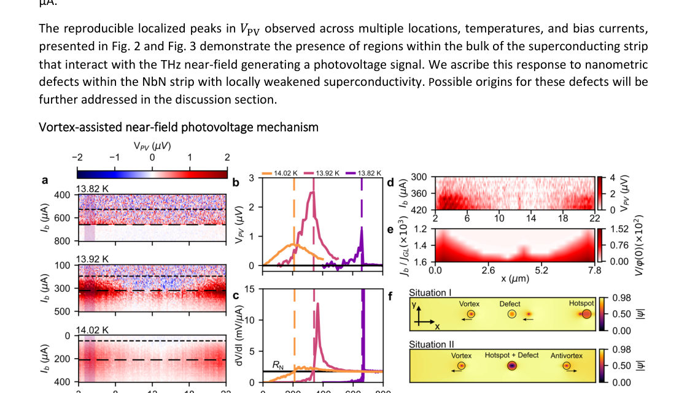
<figcaption class="paper-figure-caption"><b>Fig 4.</b> Fig. 4. Current dependence of the near-field photovoltage signal. a Current-space 𝑉PV maps measured at various temperatures. Short-dashed lines mark the 𝐼𝑐 values obtained from the far-field VI curves using the criterion 𝑉&gt; 50 μV. Long-dashed lines indicate the current corresponding to the maximum observed photovoltage. The purple shaded area corresponds to the region used to extract the horizontal cuts shown in (b). b Near-field photovoltage at the edge as a function of bias current, extracted from the maps in panel (a). Vertical dashed lines indicate the current of maximum 𝑉PV. c dV/dI curves extracted from the DC transport data under far-field illumination. d Zoomed-in current-space map...</figcaption>
</figure>
</div>

<p><strong>Summary.</strong> The research introduces THz near-field photovoltage nanoscopy to overcome the spatial resolution limits of traditional THz measurements in superconductors. By scanning a current-biased superconducting strip, the authors mapped localized photovoltage peaks that directly correlate with nanoscale material defects. This technique establishes a powerful new tool for investigating how disorder influences light-matter interactions and vortex dynamics in superconducting materials.</p>
<p><strong>Why it may be interesting.</strong> This work provides a direct, non-equilibrium optical probe into local superconducting order parameter suppression caused by material disorder, which is crucial for understanding high-Tc superconductors and moiré systems where inhomogeneity dominates physics.</p>
<details>
<summary>Detailed structure</summary>
<p><strong>Main problem.</strong> The challenge is experimentally resolving nanoscale inhomogeneities (weak spots) within superconducting materials because their relevant energy scales are in the terahertz range, which far-field THz radiation cannot spatially resolve.</p>
<p><strong>Main result.</strong> The authors successfully demonstrated a technique to map these weak spots by observing localized photovoltage peaks associated with enhanced vortex-antivortex pair nucleation at material defects.</p>
<p><strong>Method.</strong> They employed THz near-field photovoltage nanoscopy using an AFM tip as a nanoantenna to locally probe the superconducting response while applying a DC bias current.</p>
<p><strong>Model / system.</strong> The experiment uses superconducting films, such as NbN strips, which exhibit nanoscale inhomogeneities. The physics is modeled by considering vortex dynamics and pair-breaking effects induced by the THz near-field excitation.</p>
<p><strong>Key observables.</strong> Photovoltage peaks ($V_{PV}$), Full Width at Half Maximum ($   ext{FWHM}$) of the peak, and the dependence of $V_{PV}$ on bias current ($I_b$).</p>
<p><strong>Important parameters / regimes.</strong> Spatial resolution ($\sim 300 	ext{ nm}$), THz frequency ($2.52 	ext{ THz}$), and superconducting gap energy scale.</p>
<p><strong>Assumptions / limitations.</strong> The observed photovoltage is attributed to enhanced vortex-antivortex pair nucleation at defect sites, which is supported by time-dependent Ginzburg-Landau simulations.</p>
<p><strong>Figures summary.</strong> Figures show local $V_{PV}$ peak maps varying with bias current and temperature, confirming localized peaks in the bulk due to defects. Comparisons are made between these measurements and DC transport characteristics ($    ext{d}V/    ext{d}I$).</p>
<p><strong>Paper structure.</strong> The paper first introduces the limitations of far-field THz probing for nanoscale features. It then details the experimental setup, presenting results showing localized $V_{PV}$ peaks correlated with defects. Finally, it uses theoretical modeling (TDGL) to interpret the current and temperature dependence of these observed photovoltage signals.</p>
</details>
<details>
<summary>Abstract</summary>
<p>Nanoscale inhomogeneities are a defining feature of many superconducting materials, yet their local electromagnetic response has remained difficult to access experimentally. This is because their relevant energy scale lies in the terahertz range, where wavelengths -- on the order of hundreds of microns -- are too large to spatially resolve nanoscopic variations. Here, we demonstrate the first application of THz near-field photovoltage nanoscopy in a superconductor, achieving 300 nm spatial resolution at 2.52 THz. Scanning a current-biased NbN strip, we reveal photovoltage peaks within the bulk associated with nanoscopic defects of reduced superfluid density. The observed photovoltage follows the evolution of the vortex-dissipative state and is attributed to enhanced vortex-antivortex pair nucleation at defect sites. Together, these results open a direct route to probing how material inhomogeneities influence light-matter interactions in superconductors, with implications for superconducting devices and strongly inhomogeneous systems such as high-Tc and moiré materials.</p>
</details>
<p><sub><a href="#top">↑ back to top</a></sub></p>

<p><a id="paper-2607.00964"></a></p>
<h3 id="modification-of-damon-eshbach-magnetostatic-mode-spectra-in-ferromagnetparamagnet-bilayer"><a href="http://arxiv.org/abs/2607.00964v1">Modification of Damon-Eshbach magnetostatic mode spectra in ferromagnet/paramagnet bilayer</a></h3>
<p><strong>Authors:</strong> M. A. Kuznetsov<br>
<strong>Type:</strong> theory · <strong>Category:</strong> other · <strong>PDF:</strong> <a href="https://arxiv.org/pdf/2607.00964v1">https://arxiv.org/pdf/2607.00964v1</a><br>
<strong>Analysis basis:</strong> full PDF text, analyzed in chunks
<strong>Topic relevance:</strong> <code>spintronics-quantum-optics interface</code> <strong>3/5</strong> · <code>analog quantum simulation</code> <strong>1/5</strong> · <code>correlated / nonlocal dissipation</code> <strong>1/5</strong> · <code>driven-dissipative phase transition</code> <strong>1/5</strong> · <code>exotic spin models in light-matter</code> <strong>1/5</strong> · <code>non-equilibrium dynamics</code> <strong>1/5</strong></p>
<div class="figure-strip-hint">↔ Scroll figures horizontally</div>
<div class="paper-figures-scroll">
<figure class="paper-figure-card">
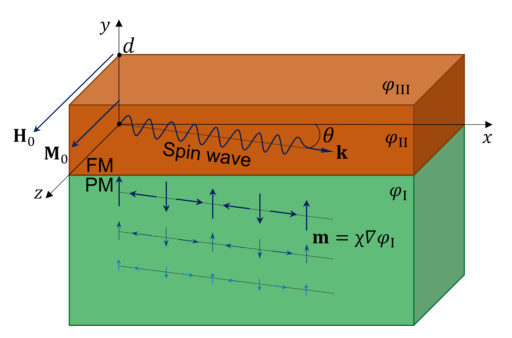
<figcaption class="paper-figure-caption"><b>Fig 1.</b> FIG. 1. Schematic illustration of the ferromag- net/paramagnet (FM/PM) bilayer. The spin wave in the FM film, with wave vector k at an angle θ to the x axis, is shown by a wavy arrow. The induced magnetization m in the PM is depicted by counterclockwise-rotating arrows.</figcaption>
</figure>
<figure class="paper-figure-card">
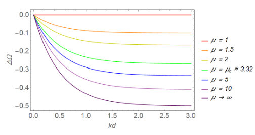
<figcaption class="paper-figure-caption"><b>Fig 2.</b> FIG. 2. Dependencies of the MSSW frequency shift ∆Ωon the wave vector modulus k (k ⊥M0) at different values of the magnetic permeability µ in the FM/PM bilayer.</figcaption>
</figure>
<figure class="paper-figure-card">
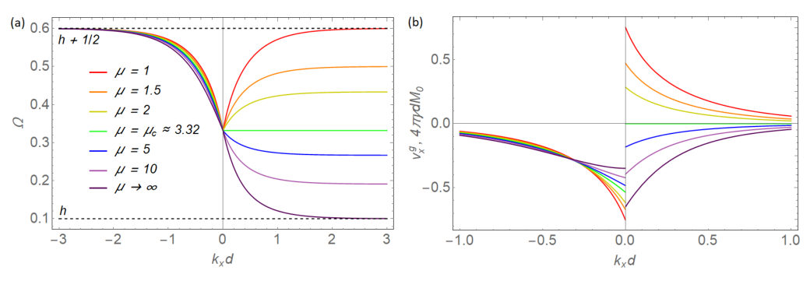
<figcaption class="paper-figure-caption"><b>Fig 3.</b> FIG. 3. Dependencies of (a) frequency Ωand (b) group velocity vg x of MSSWs on the x component of the wave vector kx (k ⊥M0) at different values of the magnetic permeability µ in the FM/PM bilayer. For the calculations, h = 0.1 (µc ≈3.32) and sM = 1 were adopted.</figcaption>
</figure>
<figure class="paper-figure-card">

<figcaption class="paper-figure-caption"><b>Fig 4.</b> FIG. 4. Frequencies of the first five BVMSW modes Ωn as functions of the wave vector modulus k (k ∥M0) in the FM/PM bilayer. The solid lines correspond to the case µ →∞, while the dashed lines correspond to the case µ = 1. For the calculations, h = 0.1 was adopted.</figcaption>
</figure>
<figure class="paper-figure-card">
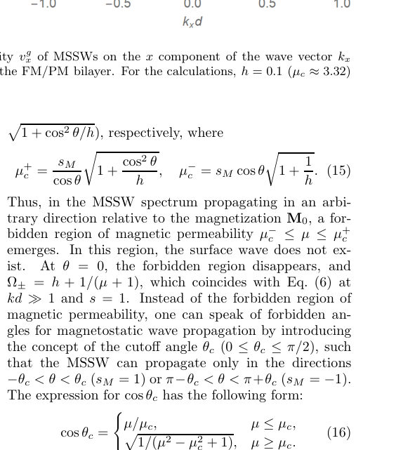
<figcaption class="paper-figure-caption"><b>Fig 5.</b> Figure 5 shows the dependencies of Ω± on µ at various θ [Fig. 5(a)] and the dependencies of Ω± on θ at various µ [Fig. 5(b)]. The light gray regions indicate the forbidden values of µ and θ where MSSWs cannot propagate. The curves Ω+ and Ω−reach the forbidden regions at µ = µ± c or θ = θc and terminate there. The branch Ω−at µ = µ− c reaches a local minimum equal to p</figcaption>
</figure>
</div>

<p><strong>Summary.</strong> This theoretical study analyzes spin wave propagation in a ferromagnet/paramagnet bilayer using magnetostatic theory. The key finding is that dipolar coupling induces significant frequency nonreciprocity, enabling the creation of unidirectional magnonic waves. This tunability—switching these directional properties via temperature or magnetic field—suggests applications for novel magnonic logic devices.</p>
<p><strong>Why it may be interesting.</strong> While focused on magnonics rather than quantum information directly, the concept of tunable, directional energy transport (unidirectional waves) is analogous to engineered quantum channels or non-Hermitian physics studied in AMO/quantum optics.</p>
<details>
<summary>Detailed structure</summary>
<p><strong>Main problem.</strong> To calculate and analyze the spectra of Damon-Eshbach magnetostatic modes (surface and bulk spin waves) in a ferromagnet/paramagnet bilayer, focusing on how dipolar coupling modifies these spectra.</p>
<p><strong>Main result.</strong> The dipolar coupling induces nonreciprocity in surface spin waves, allowing for the creation of unidirectional wave regimes that can be switched on or off by varying external magnetic fields or temperature near the Curie point.</p>
<p><strong>Method.</strong> Analytical calculation using the magnetostatic approximation and solving coupled differential equations across the FM/PM interface.</p>
<p><strong>Model / system.</strong> The system is an in-plane magnetized ferromagnet (FM) film placed on a paramagnet (PM) half-space. The PM's magnetic susceptibility follows the Curie-Weiss law, $\chi \propto 1/(T-T_C)$.</p>
<p><strong>Key observables.</strong> Spin-wave frequency spectrum ($\Omega$), frequency nonreciprocity ($\Delta\Omega$), and group/phase velocities ($v_g, v_p$).</p>
<p><strong>Important parameters / regimes.</strong> Magnetic permeability of the PM ($\mu$), external magnetic field ($H_0$ or $h$), and temperature ($T$) relative to the Curie temperature ($T_C$).</p>
<p><strong>Assumptions / limitations.</strong> The magnetostatic approximation is used, and the analysis assumes a thick FM film. The PM susceptibility follows the Curie-Weiss law.</p>
<p><strong>Figures summary.</strong> Figures illustrate the dependence of nonreciprocity ($\Delta\Omega$) on wave vector ($k$), showing unidirectional regimes; they also map out spectra for arbitrary propagation angles ($    heta$), revealing forbidden regions and mode splitting between MSSWs and BVMSWs.</p>
<p><strong>Paper structure.</strong> The paper establishes the governing equations using magnetostatic theory, analyzes the specific case of perpendicular propagation ($k \perp M_0$) to show nonreciprocity, then extends the analysis to arbitrary propagation angles ($  heta$), detailing how MSSW and BVMSW spectra interact and defining parameter regimes for wave confinement.</p>
</details>
<details>
<summary>Abstract</summary>
<p>Using the magnetostatic approximation, we calculate the spectra of bulk and surface spin waves in an in-plane magnetized ferromagnet/paramagnet bilayer. Due to the dipolar coupling between the layers, the paramagnet becomes polarized, which in turn modifies the spectrum of the Damon-Eshbach magnetostatic modes. We assume that the paramagnet is characterized by a magnetic susceptibility, $χ\propto 1/(T-T_C)$, which reaches large values when the system temperature $T$ is close to the Curie temperature $T_C$. We find the conditions under which surface spin waves become unidirectional, i.e., capable of carrying energy in only one direction, and determine the magnitude of their frequency nonreciprocity. We demonstrate the possibility of switching the unidirectional wave regime on and off by varying the external magnetic field or temperature, making the ferromagnet/paramagnet system an attractive platform for tunable magnonic logic devices.</p>
</details>
<p><sub><a href="#top">↑ back to top</a></sub></p>

<p><a id="paper-2607.00630"></a></p>
<h3 id="quench-of-chiral-superconductivity-by-quantum-phase-fluctuations-in-twisted-cuprate-bilayers"><a href="http://arxiv.org/abs/2607.00630v1">Quench of chiral superconductivity by quantum phase fluctuations in twisted cuprate bilayers</a></h3>
<p><strong>Authors:</strong> Yin Shi, Mengxian Zhao, Fei Yang, Miao Liu, Sheng Meng<br>
<strong>Type:</strong> theory · <strong>Category:</strong> strongly correlated electrons · <strong>PDF:</strong> <a href="https://arxiv.org/pdf/2607.00630v1">https://arxiv.org/pdf/2607.00630v1</a><br>
<strong>Analysis basis:</strong> full PDF text, analyzed in chunks
<strong>Topic relevance:</strong> <code>Keldysh / 2PI / non-Gaussian methods</code> <strong>3/5</strong> · <code>analog quantum simulation</code> <strong>1/5</strong> · <code>correlated / nonlocal dissipation</code> <strong>1/5</strong> · <code>driven-dissipative phase transition</code> <strong>1/5</strong> · <code>methods for driven-dissipative</code> <strong>1/5</strong> · <code>non-equilibrium dynamics</code> <strong>1/5</strong></p>
<div class="figure-strip-hint">↔ Scroll figures horizontally</div>
<div class="paper-figures-scroll">
<figure class="paper-figure-card">
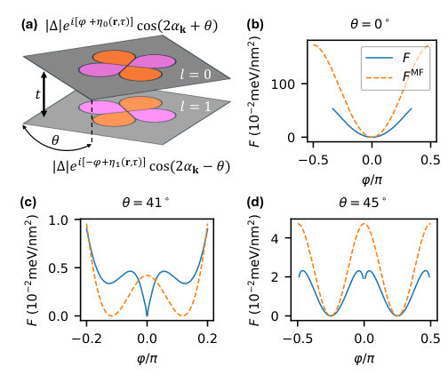
<figcaption class="paper-figure-caption"><b>Fig 1.</b> FIG. 1. (a) Schematic of a twisted bilayer superconductor, where each layer alone is a d-wave superconductor, and the two layers are coupled through electron tunneling with an amplitude t. αk is the polar angle of the momentum k. The superconducting phase of each layer can be decomposed into a static part ±φ and a dynamical part ηl(r, τ) (dependent on the imaginary time τ). A nonzero φ (not integer multiple of π) signifies d + id′ chiral superconductivity. Crucially, fluctu- ations in the dynamical phases could renormalize the equilib- rium φ. (b–d) Free energy density (vertically shifted to match minima) with (blue solid line) and without (orange dashed line) phase fluctuations at zero...</figcaption>
</figure>
<figure class="paper-figure-card">
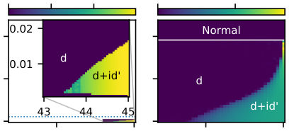
<figcaption class="paper-figure-caption"><b>Fig 2.</b> FIG. 2. Phase diagrams in the twist-angle–temperature plane with (left panel) and without (right panel) phase fluctuations for t = 10 meV. The false color represents the minimal super- conducting gap. The phase diagrams are symmetric about θ = 45◦. T 1L c is the superconducting transition temperature of a monolayer. The horizontal dotted line in the left panel indicates the lowest temperature reached in existing experi- ments [11]. The white line in the right panel delineates the normal–superconducting phase border, while the d–(d + id′) border is obvious by the false color.</figcaption>
</figure>
<figure class="paper-figure-card">
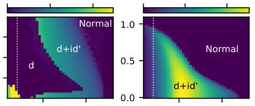
<figcaption class="paper-figure-caption"><b>Fig 3.</b> FIG. 3. Phase diagrams in the tunneling-amplitude– temperature plane with (left panel) and without (right panel) phase fluctuations. The twist angle is fixed at 45◦. The false color represents the minimal superconducting gap. The dot- ted line marks the realistic tunneling amplitude t = 10 meV. Note the different scales of the y axes.</figcaption>
</figure>
<figure class="paper-figure-card">
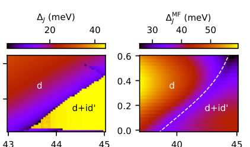
<figcaption class="paper-figure-caption"><b>Fig 4.</b> FIG. 4. Josephson gap with (left column) and without (right column) phase fluctuations for t = 10 meV. The dashed line delineates the d–(d+id′) border for the mean-field case, while such a border is obvious by the false color for the phase fluc- tuating case.</figcaption>
</figure>
</div>

<p><strong>Summary.</strong> The paper theoretically analyzes the stability of chiral d+id' superconductivity in twisted cuprate bilayers against quantum phase fluctuations. By incorporating these fluctuations into the free energy calculation, the authors show that the exotic chiral state is highly fragile, surviving only under extreme conditions. This work establishes quantum phase fluctuations as a critical constraint on realizing TRSB superconducting phases in low-dimensional materials.</p>
<p><strong>Why it may be interesting.</strong> This work demonstrates how low-energy collective fluctuations can fundamentally constrain exotic superconducting orders like chiral superconductivity, providing a general theoretical framework applicable to other layered quantum materials where phase coherence is crucial.</p>
<details>
<summary>Detailed structure</summary>
<p><strong>Main problem.</strong> The study investigates how quantum phase fluctuations fundamentally alter the predicted chiral d+id' superconducting state in twisted cuprate bilayers, particularly concerning Time-Reversal Symmetry Breaking (TRSB).</p>
<p><strong>Main result.</strong> Quantum phase fluctuations strongly suppress the stability of the chiral phase, restricting it to a narrow twist-angle window and ultra-low temperatures. This leads to a first-order transition into the regular d-wave state.</p>
<p><strong>Method.</strong> The authors derived the free energy functional by self-consistently incorporating the renormalization of the relative interlayer phase due to dynamical quantum phase fluctuations.</p>
<p><strong>Model / system.</strong> The system is modeled using a continuum microscopic Hamiltonian for twisted cuprate bilayers, considering both d-wave and chiral d+id' superconducting orders. The analysis focuses on the collective behavior of the interlayer phase degree of freedom.</p>
<p><strong>Key observables.</strong> Minimal superconducting gap (2\Delta_min) to distinguish between $d+id'$ ($>0$) and nodal $d$-wave ($=0$), and the Josephson gap ($\Delta_J$).</p>
<p><strong>Important parameters / regimes.</strong> Twist angle ($  heta$), temperature ($T/T_{1L}^c$), and interlayer tunneling amplitude ($t$). The chiral phase is only stable at very low temperatures (e.g., $\lesssim 1.4 	ext{ K}$).</p>
<p><strong>Assumptions / limitations.</strong> The analysis uses a simplified local form for the interlayer tunneling $t_l(r) = t_l\delta(r)$ and relies on a derived free energy functional from companion work.</p>
<p><strong>Figures summary.</strong> Figures illustrate phase diagrams ($   heta$–$T$) showing how quantum fluctuations narrow the region where the chiral state exists, contrasting with mean-field predictions.</p>
<p><strong>Paper structure.</strong> The paper builds upon theoretical proposals for chiral superconductivity by introducing phase fluctuation corrections to the free energy functional. It then maps out the resulting phase diagram in terms of twist angle and temperature, concluding with implications for Josephson coupling near quantum critical points.</p>
</details>
<details>
<summary>Abstract</summary>
<p>Following theoretical proposals of chiral $d+id'$ superconductivity in twisted cuprate bilayers, experimental signatures of time-reversal symmetry breaking (TRSB) remain highly controversial. Here we demonstrate that quantum phase fluctuations fundamentally reshape the phase diagram of this proposed chiral state. Unlike regular superconducting orders, the chiral $d+id'$ state requires long-range coherence of an interlayer phase degree of freedom and is therefore intrinsically vulnerable to phase fluctuations. Incorporating these fluctuations nearly eliminates the chiral phase over most parts of the phase diagram, restricting it to a narrow twist-angle window and ultra-low temperatures. The fluctuation-driven destruction of chirality produces a first-order transition into the $d$-wave state, giving rise to coexistence and metastability. Meanwhile, Josephson phase locking is strongly weakened at the TRSB quantum critical point, which sits well within the superconducting regime. More broadly, our work establishes quantum phase fluctuations as a fundamental constraint on the emergence of TRSB phases in low-dimensional layered quantum materials.</p>
</details>
<p><sub><a href="#top">↑ back to top</a></sub></p>

<p><a id="paper-2607.01160"></a></p>
<h3 id="electric-field-effects-on-defect-migration-energetics-in-gan"><a href="http://arxiv.org/abs/2607.01160v1">Electric-field effects on defect migration energetics in GaN</a></h3>
<p><strong>Authors:</strong> Farshid Reza, Hamdy Arkoub, Alexander S. Hauck, Adri C. T. van Duin, Miaomiao Jin<br>
<strong>Type:</strong> theory · <strong>Category:</strong> other · <strong>PDF:</strong> <a href="https://arxiv.org/pdf/2607.01160v1">https://arxiv.org/pdf/2607.01160v1</a><br>
<strong>Analysis basis:</strong> full PDF text, analyzed in chunks
<strong>Topic relevance:</strong> <code>non-equilibrium dynamics</code> <strong>2/5</strong> · <code>Keldysh / 2PI / non-Gaussian methods</code> <strong>1/5</strong> · <code>analog quantum simulation</code> <strong>1/5</strong> · <code>driven-dissipative phase transition</code> <strong>1/5</strong> · <code>methods for driven-dissipative</code> <strong>1/5</strong> · <code>non-equilibrium universality</code> <strong>1/5</strong></p>
<div class="figure-strip-hint">↔ Scroll figures horizontally</div>
<div class="paper-figures-scroll">
<figure class="paper-figure-card">
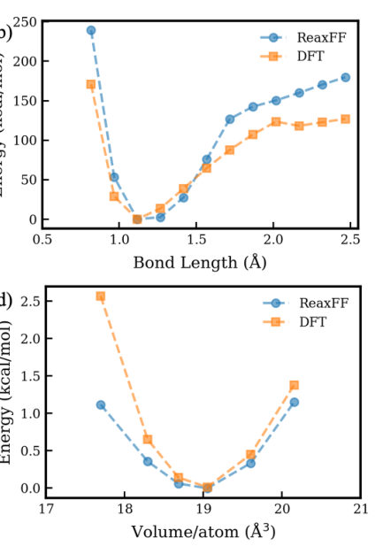
<figcaption class="paper-figure-caption"><b>Fig 1.</b> FIG. 1: EOS data for wurtzite GaN (a), N2 molecule bond length energy profile</figcaption>
</figure>
<figure class="paper-figure-card">

<figcaption class="paper-figure-caption"><b>Fig 2.</b> FIG. 2: (a) Energy difference between defect structure and perfect structure. (b)</figcaption>
</figure>
<figure class="paper-figure-card">

<figcaption class="paper-figure-caption"><b>Fig 3.</b> FIG. 3: Migration directions for (a) VGa, (b) VN, (c) Gai1,oct, and (d) Ni2,split,</figcaption>
</figure>
<figure class="paper-figure-card">

<figcaption class="paper-figure-caption"><b>Fig 4.</b> FIG. 4: Effect of an external electric field on the total system energy relative to zero</figcaption>
</figure>
<figure class="paper-figure-card">
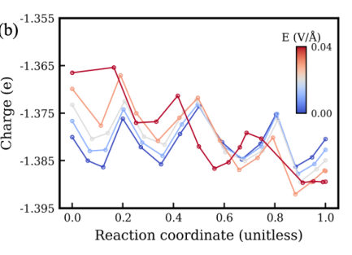
<figcaption class="paper-figure-caption"><b>Fig 5.</b> FIG. 5: Charge distribution variation with applied electric field along x-direction for</figcaption>
</figure>
</div>

<p><strong>Summary.</strong> This work develops a reactive force field for GaN to simulate how defects move when subjected to high electric fields. The key finding is that the interaction is complex, causing anisotropic barrier changes due to charge redistribution and lattice distortion, rather than a simple linear shift. This provides critical insight into device reliability in extreme electrical environments.</p>
<p><strong>Why it may be interesting.</strong> While focused on solid-state defects rather than quantum systems, the study's focus on complex, non-linear coupling between an external field (an electromagnetic perturbation) and the material's internal energy landscape shares conceptual parallels with understanding driven dynamics in open quantum systems or materials under extreme bias.</p>
<details>
<summary>Detailed structure</summary>
<p><strong>Main problem.</strong> Assessing defect transport mechanisms in GaN under high operating electric fields is crucial for predicting device reliability in power electronics.</p>
<p><strong>Main result.</strong> Electric fields modify defect migration barriers anisotropically through charge-lattice coupling, deviating significantly from simple linear dipole predictions.</p>
<p><strong>Method.</strong> The study develops and applies a ReaxFF reactive force field trained on DFT data to simulate defect migration using CI-NEB methods under external electric fields.</p>
<p><strong>Model / system.</strong> The system is Gallium Nitride (GaN) in its wurtzite structure, focusing on intrinsic point defects like vacancies ($    ext{V}<em ext_N="ext{N">{    ext{Ga}},   ext{V}</em>$) and interstitials. The simulation incorporates external electric fields up to $40 	ext{ MV/cm}$.}</p>
<p><strong>Key observables.</strong> Defect formation energies, migration barriers ($E_F^B$, $E_R^B$), charge distribution variation, and the deviation from linear field dependence.</p>
<p><strong>Important parameters / regimes.</strong> Electric field strength (up to $0.04 	ext{ V}/	ext{\AA}$), defect type, and field orientation (parallel vs. perpendicular to migration path).</p>
<p><strong>Assumptions / limitations.</strong> The use of a ReaxFF force field with the QEq scheme implies that the results represent neutral defects and are a lower bound compared to fully charged states.</p>
<p><strong>Figures summary.</strong> Figures illustrate EOS comparisons, charge distribution changes during defect movement, and energy profiles showing the effect of external fields on migration barriers for different defect types.</p>
<p><strong>Paper structure.</strong> The paper first validates the ReaxFF model against DFT results for structural properties. It then calculates zero-field migration barriers before systematically applying increasing electric fields to analyze the resulting modulation of forward and reverse barriers, comparing findings to linear models.</p>
</details>
<details>
<summary>Abstract</summary>
<p>A predictive understanding of defect transport in GaN under operating electric fields is critical for assessing device reliability in high-power and radiation environments. In this work, a ReaxFF reactive force field for GaN is developed using a density-functional-theory training set that includes structural, thermodynamic, and defect properties. The force field yields various properties such as lattice parameters, cohesive energies, and defect formation and migration energies in close agreement with prior first-principles and experimental results. Under externally applied electric fields, we find that migration barriers can be strongly modulated, with changes that depend on defect type and field orientation. Notably, the electric fields do not simply linearly bias defect motion in GaN, but can anisotropically modify migration barriers through charge-lattice coupling, leading to nonlinear transport behavior. The response arises from field-induced partial charge redistribution and local lattice distortion. These results demonstrate that electric fields can complexly modify the defect migration landscape, providing new insight into defect transport in GaN under high-field conditions.</p>
</details>
<p><sub><a href="#top">↑ back to top</a></sub></p>

<p><a id="paper-2607.00919"></a></p>
<h3 id="symmetry-classification-of-non-reciprocal-responses-in-multiterminal-ring-devices"><a href="http://arxiv.org/abs/2607.00919v1">Symmetry Classification of Non-Reciprocal Responses in Multiterminal Ring Devices</a></h3>
<p><strong>Authors:</strong> Chen-How Huang, Tero T. Heikkilä<br>
<strong>Type:</strong> theory · <strong>Category:</strong> other · <strong>PDF:</strong> <a href="https://arxiv.org/pdf/2607.00919v1">https://arxiv.org/pdf/2607.00919v1</a><br>
<strong>Analysis basis:</strong> full PDF text, analyzed in chunks
<strong>Topic relevance:</strong> <code>analog quantum simulation</code> <strong>1/5</strong> · <code>correlated / nonlocal dissipation</code> <strong>1/5</strong> · <code>driven-dissipative phase transition</code> <strong>1/5</strong> · <code>methods for driven-dissipative</code> <strong>1/5</strong> · <code>non-equilibrium dynamics</code> <strong>1/5</strong></p>
<div class="figure-strip-hint">↔ Scroll figures horizontally</div>
<div class="paper-figures-scroll">
<figure class="paper-figure-card">
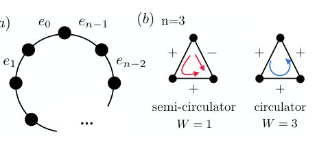
<figcaption class="paper-figure-caption"><b>Fig 1.</b> FIG. 1. (a) n-vertex ring for the classification of non- reciprocal electronic response. Each bond is assigned a binary current ek ∈{1, −1} describing the direction (counterclock- wise, clockwise) of non-reciprocity. (b) n = 3 ring of two different orbits classified by symmetries, the semi-circulator and circulator configurations.</figcaption>
</figure>
<figure class="paper-figure-card">
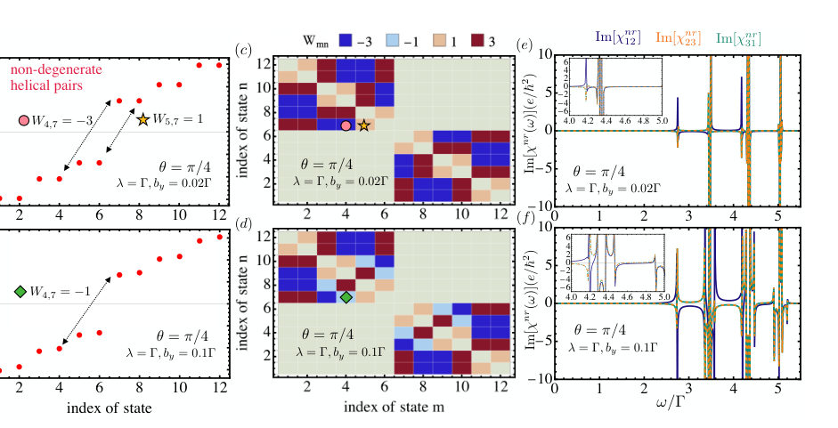
<figcaption class="paper-figure-caption"><b>Fig 2.</b> FIG. 3. (a,b) Single particle energy spectrum for the minimal model at θ = π/4 for (a) by = 0.02Γ (b) by = 0.1Γ. We also indicate the value of the Wmn for some of the intra(inter)-helcial pair transitions by the black arrows and labels in (c,d). (c,d) Wmn = P</figcaption>
</figure>
<figure class="paper-figure-card">
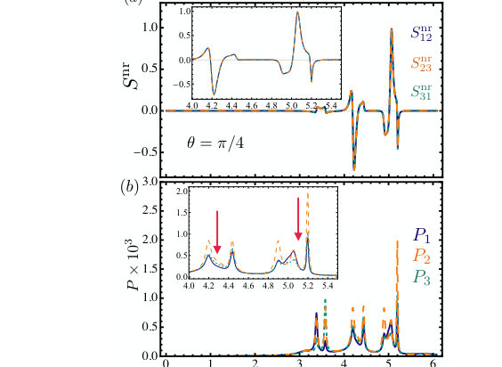
<figcaption class="paper-figure-caption"><b>Fig 3.</b> FIG. 4. Characterization of the system with in-plane field. (a) is the non-reciprocal transmission of the device. The red arrows indicate the reactive response region of the device. (b) show the absorption spectra of the three terminals of the device.</figcaption>
</figure>
<figure class="paper-figure-card">
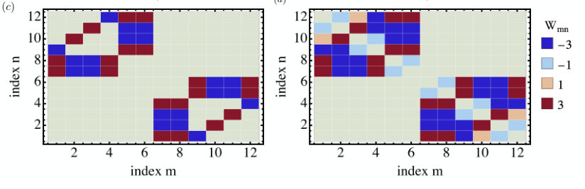
<figcaption class="paper-figure-caption"><b>Fig 4.</b> FIG. 5. Reactive part of the response function Im[χnr] for (a) θ = π/3 (b) θ = π/4. (c,d) Wmn = P</figcaption>
</figure>
<figure class="paper-figure-card">
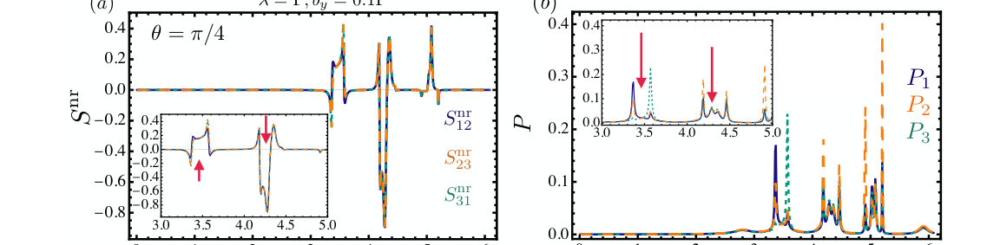
<figcaption class="paper-figure-caption"><b>Fig 5.</b> FIG. 6. (a) Non-reciprocal transmission and (b) power absorption of the toy model including the finite broadening and temperature kBT = δ = 0.001Γ.</figcaption>
</figure>
</div>

<p><strong>Summary.</strong> This paper introduces a group-theoretic framework to classify non-reciprocal current responses in quantum ring devices. Using symmetry analysis on $n$-vertex rings, the authors predict that observable non-reciprocity requires breaking both time-reversal and inversion symmetries simultaneously. The theory is validated using a three-site superconducting quantum dot model, confirming predictions for circulator and semi-circulator transport regimes.</p>
<p><strong>Why it may be interesting.</strong> This work provides a powerful theoretical tool—symmetry classification—to predict fundamental transport properties (non-reciprocity) in mesoscopic superconducting circuits, linking topology/geometry directly to measurable electrical response.</p>
<details>
<summary>Detailed structure</summary>
<p><strong>Main problem.</strong> The paper develops a symmetry-based framework to classify non-reciprocal responses occurring in multiterminal quantum ring devices.</p>
<p><strong>Main result.</strong> Non-reciprocity requires the simultaneous breaking of both time-reversal (T) and spatial inversion (I) symmetries. The geometry dictates which specific circulator or semi-circulator responses are physically observable.</p>
<p><strong>Method.</strong> The analysis heavily relies on group theory, specifically applying Burnside's Lemma to classify the $2^n$ possible current configurations into symmetry equivalence classes (orbits).</p>
<p><strong>Model / system.</strong> The system is modeled as a ring of $n$ vertices with bonds characterized by preferred signal flow directions ($\pm 1$). The theoretical predictions are validated using a minimal toy model of three quantum dots coupled to superconducting baths.</p>
<p><strong>Key observables.</strong> Non-reciprocal transmission ($S_{nr}$), the reactive component of the current-current response function ($ ext{Im}[\chi_{nr}]$), and the absolute non-reciprocal weight ($R_{nr}^{tot}$).</p>
<p><strong>Important parameters / regimes.</strong> The number of terminals $n$ (especially $n=3$), geometric symmetry (equilateral vs. isosceles), and external fields like Zeeman field ($b_y$) or SOC ($\lambda$).</p>
<p><strong>Assumptions / limitations.</strong> The analysis assumes that the non-reciprocal response can be entirely classified by the underlying discrete symmetries of the ring geometry, even when microscopic details are involved.</p>
<p><strong>Figures summary.</strong> Figures illustrate the $n$-vertex ring setup and show examples of circulator ($W=3$) and semi-circulator ($W=1$) configurations. Other figures plot non-reciprocal transmission spectra, reactive response functions ($ ext{Im}[\chi_{nr}]$), and energy level splittings as a function of symmetry breaking parameters.</p>
<p><strong>Paper structure.</strong> The paper progresses from establishing the general group theory framework for $n$-rings to analyzing specific cases ($n=3$ equilateral vs. isosceles) using Burnside's lemma, culminating in validation via calculations on a minimal quantum dot toy model that predicts observable circulator and semi-circulator responses.</p>
</details>
<details>
<summary>Abstract</summary>
<p>We present a symmetry-based framework to classify the non-reciprocal responses of multiterminal ring quantum devices. The device is modeled as a ring of $n$ vertices, where a binary variable $e_k\in\{+1,-1\}$ on each bond encodes the preferred direction of signal flow between terminals. Non-reciprocity corresponds to a preferred current configuration on the ring, and the symmetry group of the device partitions all $2^n$ configurations into equivalence classes(orbits) characterized by a topological winding number $W$. Using the minimal non-trivial case $n=3$, we establish two results independent of microscopic details. First, lifting the degeneracy within an orbit generates non-reciprocal responses. For $n=3$ this requires simultaneous breaking of both time-reversal $T$ and spatial inversion $I$. Breaking either alone is insufficient. Second, the residual geometry symmetry after $T$ and $I$ are broken determines which responses are observable. For an isosceles triangular geometry, only two types of response are allowed: uniform circulation (all bonds carrying current in the same direction) and semi-circulation with the reversed bond on the geometrically distinct base. Semi-circulation with the reversed bond on either equal leg is symmetry-forbidden. Both predictions are validated using a minimal toy model of three quantum dots coupled to superconducting baths, which demonstrates a reactive quantum circulator response.</p>
</details>
<p><sub><a href="#top">↑ back to top</a></sub></p>

<p><a id="paper-2607.00683"></a></p>
<h3 id="facet-selective-ballistic-supercurrent-in-a-weak-topological-insulator"><a href="http://arxiv.org/abs/2607.00683v1">Facet-selective ballistic supercurrent in a weak topological insulator</a></h3>
<p><strong>Authors:</strong> Prasanna Rout, Ankit Khola, Lalit Pandey, Paolo Sessi, Xiaochun Huang, Ivo Cools, S. Galeski, Matthias Bode, Johan Åkerman, Floriana Lombardi, Thilo Bauch, Saroj P. Dash<br>
<strong>Type:</strong> experiment · <strong>Category:</strong> other · <strong>PDF:</strong> <a href="https://arxiv.org/pdf/2607.00683v1">https://arxiv.org/pdf/2607.00683v1</a><br>
<strong>Analysis basis:</strong> full PDF text, analyzed in chunks
<strong>Topic relevance:</strong> <code>QC/QI experiment</code> <strong>1/5</strong> · <code>interference shaping light</code> <strong>1/5</strong> · <code>spintronics-quantum-optics interface</code> <strong>1/5</strong></p>
<div class="figure-strip-hint">↔ Scroll figures horizontally</div>
<div class="paper-figures-scroll">
<figure class="paper-figure-card">
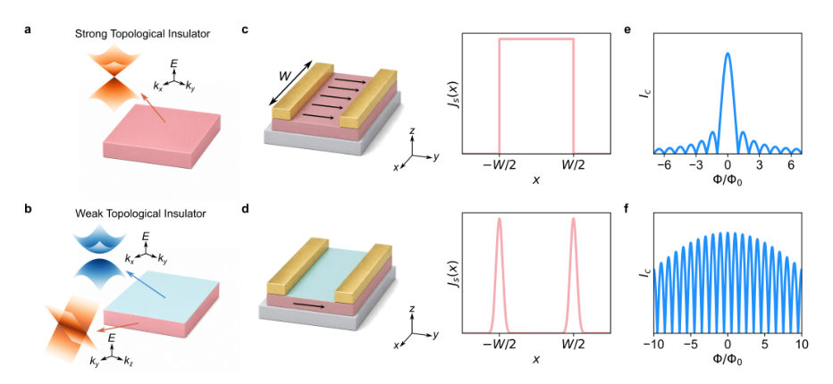
<figcaption class="paper-figure-caption"><b>Fig 1.</b> Fig. 1: Probing the boundary states in three-dimensional topological insulators by super- conducting quantum interferometry. a, b, Schematic band structure of a strong topological insulator (STI, a), and a weak topological insulator (WTI, b). An STI hosts gapless Dirac cones on the time- reversal-symmetric crystal facets (pink surfaces) while the bulk is insulating. In a WTI, conducting surface states due to one-dimensional Dirac lines reside only on specific crystallographic facets such as y–z and z–x (pink surfaces), whereas other x–y facets (blue surfaces) remain fully gapped. c, d, Josephson junc- tions based on an STI and a WTI coupled to superconducting electrodes. In the STI junction...</figcaption>
</figure>
<figure class="paper-figure-card">

<figcaption class="paper-figure-caption"><b>Fig 2.</b> Fig. 2: Electronic transport and spectroscopic measurements of ZrTe5. a, Temperature depen- dence of the longitudinal resistivity ρxx measured with current applied along the a-axis. The top panel shows the crystal structure of ZrTe5, consisting of two-dimensional layers in the a–c plane that are cou- pled by van der Waals forces along the b-axis. In the WTI regime, the a–c surfaces are gapped, while topological surface states reside on the a–b and b–c facets. b, c, Magnetoresistance ∆Rxx(B) after back- ground subtraction, measured at 2 K for various field angles α in the a–b plane and β in the b–c plane. Here, α and β denote the angle between the b-axis and the magnetic field as illustrated...</figcaption>
</figure>
<figure class="paper-figure-card">
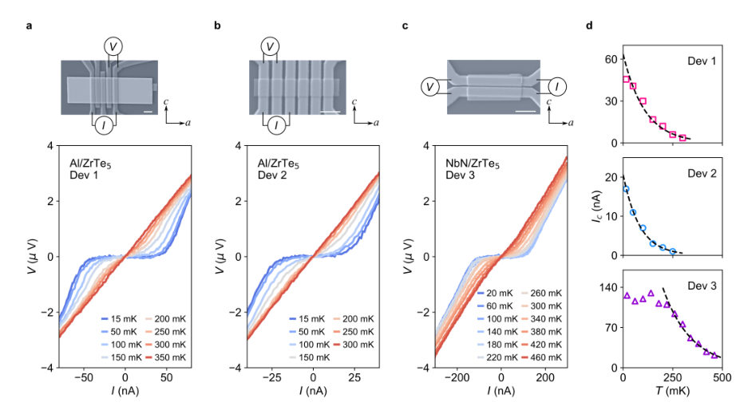
<figcaption class="paper-figure-caption"><b>Fig 3.</b> Fig. 3: Supercurrent transport in ZrTe5 Josephson junctions. a,b, Voltage V across the Al/ZrTe5 junction as a function of applied current I flowing along the a-axis, measured at different temperatures. The data for Dev 1 and Dev 2 are presented in a and b, respectively. c, V (I) curves for the NbN/ZrTe5 junction (Dev 3), where the current is along the c-axis. The top panels in a-c show scanning electron microscopy images of the junctions with the measurement schematics (Scale bar is 2 µm). d, Temperature dependence of Ic for three junctions, extracted from a-c, together with fits (dashed lines) to the data in the high-temperature regime.</figcaption>
</figure>
<figure class="paper-figure-card">

<figcaption class="paper-figure-caption"><b>Fig 4.</b> Fig. 4: Superconducting quantum interferometry revealing spatially localized supercurrent in Al/ZrTe5 junctions. Superconducting quantum interference patterns for Dev 1 (a), and Dev 2 (b) measured at 20 mK, exhibiting clear SQUID-like oscillations. c, Schematics of the junctions, where the current flows along the a-axis and the magnetic field is applied along the b-axis. d,e, Corresponding supercurrent density profiles Js(x) extracted from the interference patterns in a,b. Two pronounced peaks indicate that the supercurrent is localized near opposite a–b facets. The spatial supercurrent distributions are fitted by a combination of two Gaussian peaks (dashed lines).</figcaption>
</figure>
<figure class="paper-figure-card">
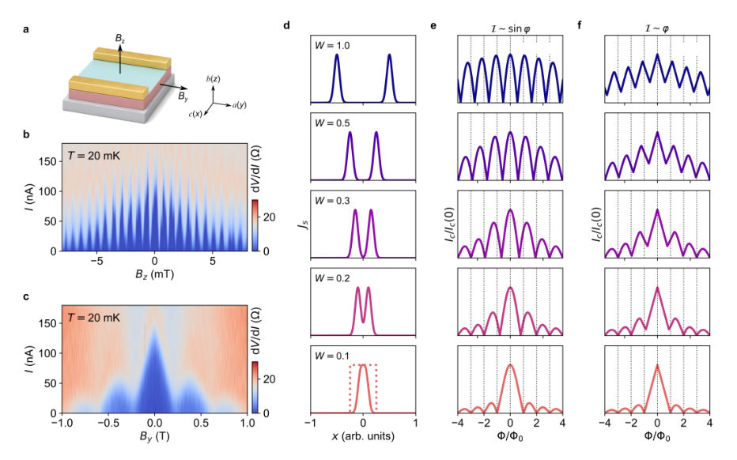
<figcaption class="paper-figure-caption"><b>Fig 5.</b> Fig. 5: Field-orientation dependence of facet-selective supercurrent. a, Schematic of the NbN/ZrTe5 Josephson junction (Dev 3), where the current flows along the c-axis. b, Superconducting interference patterns measured at 20 mK for magnetic field Bz applied along the b-axis, showing behavior similar to that in Fig. 4. c, Same measurement performed for magnetic field By applied along the a-axis. d, The supercurrent density profiles for the parametrized junction width W = 1, 0.5, 0.3, 0.2, and 0.1. e,f, Corresponding simulated interference patterns for a sinusoidal (e) and a sawtooth (f) current–phase relation (see Supplementary Note 7 for details). For reference, a uniform supercurrent...</figcaption>
</figure>
</div>

<p><strong>Summary.</strong> The research demonstrates the existence of supercurrents confined specifically to certain facets of a weak topological insulator ($    ext{ZrTe}_5$). By using superconducting interferometry, the authors confirmed that this facet-selectivity and ballistic nature are direct consequences of the material's underlying bulk topology. This establishes WTIs as a promising platform for designing next-generation, topologically controlled superconducting devices.</p>
<p><strong>Why it may be interesting.</strong> This work provides direct experimental evidence linking bulk topological invariants (WTI classification) to macroscopic quantum phenomena (supercurrent distribution), which is highly relevant for understanding engineered quantum materials interfaces.</p>
<details>
<summary>Detailed structure</summary>
<p><strong>Main problem.</strong> The primary goal is to demonstrate and characterize facet-selective ballistic supercurrent flow in three-dimensional weak topological insulators (WTIs). This addresses the challenge of confining superconducting currents to specific crystal facets.</p>
<p><strong>Main result.</strong> The authors successfully demonstrated SQUID-like critical current oscillations confined to specific crystallographic facets, confirming that the supercurrent is dictated by the underlying bulk topology of the WTI material ($   ext{ZrTe}_5$).</p>
<p><strong>Method.</strong> Superconducting quantum interferometry was performed on Josephson junctions formed with $   ext{ZrTe}_5$, supplemented by STM/STS measurements and analysis of magnetic field dependence.</p>
<p><strong>Model / system.</strong> The system utilizes Weak Topological Insulators ($  ext{ZrTe}_5$), which possess gapless topological surface states only on selected facets, contrasting with Strong TIs. Superconductivity is induced via proximity coupling in Josephson junctions.</p>
<p><strong>Key observables.</strong> SQUID-like critical current oscillations ($I_c$ vs $B$), exponential temperature dependence of $I_c$, and distinct interference patterns dependent on the magnetic field orientation relative to crystal facets.</p>
<p><strong>Important parameters / regimes.</strong> The supercurrent is confined to specific side facets, exhibiting ballistic transport signatures characterized by an exponential temperature dependence ($\exp(-\pi^2 k_B T / \delta E)$).</p>
<p><strong>Assumptions / limitations.</strong> The measurements assume that the observed superconducting current flow is dominated by the topological surface states rather than trivial bulk conduction channels.</p>
<p><strong>Figures summary.</strong> Figures show SQUID-like $I$-$V$ curves and interference patterns (Fig. 4) confirming facet confinement, alongside STM/STS data showing a bulk gap and enhanced LDOS at step edges (Fig. 2).</p>
<p><strong>Paper structure.</strong> The paper establishes the theoretical basis for WTI surface currents, details the experimental setup using Josephson junctions on $    ext{ZrTe}_5$, presents measurements confirming SQUID oscillations and field-orientation dependence, and concludes by establishing WTIs as a platform for facet-resolved superconducting devices.</p>
</details>
<details>
<summary>Abstract</summary>
<p>Topological superconductivity is widely pursued by inducing superconducting correlations in topologically protected boundary states. In two dimensions, this strategy has been realized using one-dimensional topological edge modes, but in three-dimensional crystals, spatially separated surface supercurrents confined to selected facets have not yet been achieved. Here we demonstrate facet-selective ballistic supercurrent in Josephson junctions based on the weak topological insulator ZrTe<sub>5</sub>. Superconducting quantum interferometry reveals SQUID-like critical current oscillations with flux-quantum periodicity, establishing that the supercurrent is spatially concentrated on specific crystallographic facets that host gapless topological surface states. Rotating the magnetic field yields markedly distinct interference patterns, linking the supercurrent distribution to the underlying bulk topology. The exponential temperature dependence of the critical current and triangular interference lobes provide signatures of ballistic transport due to high-transmission topological channels. These results establish weak topological insulators as a platform for facet-resolved superconducting devices and higher-order topological superconductivity.</p>
</details>
<p><sub><a href="#top">↑ back to top</a></sub></p>

<p><a id="paper-2607.00694"></a></p>
<h3 id="near-field-characterisation-of-guided-modes-in-ws2-nanobeams-and-quasi-bulk-crystals"><a href="http://arxiv.org/abs/2607.00694v1">Near-Field Characterisation of Guided Modes in WS2 Nanobeams and Quasi-Bulk Crystals</a></h3>
<p><strong>Authors:</strong> Zara S. Taylor, Luke M. Hallacy, Xuerong Hu, Oliver T. Williams, Simone Strohmair, Fabian Felixberger, Alexander J. Knight, Timothy Chester-Parsons, Luke R. Wilson, Alexander I. Tartakovskii<br>
<strong>Type:</strong> experiment · <strong>Category:</strong> other · <strong>PDF:</strong> <a href="https://arxiv.org/pdf/2607.00694v1">https://arxiv.org/pdf/2607.00694v1</a><br>
<strong>Analysis basis:</strong> full PDF text, analyzed in chunks
<strong>Topic relevance:</strong> <code>interference shaping light</code> <strong>1/5</strong> · <code>quantum measurements</code> <strong>1/5</strong> · <code>quantum optics experiment</code> <strong>1/5</strong></p>
<div class="figure-strip-hint">↔ Scroll figures horizontally</div>
<div class="paper-figures-scroll">
<figure class="paper-figure-card">

<figcaption class="paper-figure-caption"><b>Fig 1.</b> Figure 1: Optical waveguide quality of WS2 throughout the vis-NIR spectral window relative to silicon. a) atomic structure of WS2 as seen from above (top) and the side (bottom). b) Refractive indices in the vis-NIR window of WS2 and silicon sourced from [30] and [40], respectively. c) Extinction coefficient of a WS2 crystal measured via imaging Cavity-Enhanced Absorption Spectroscopy (iCEAS) within strongly and weakly absorbing local crystal regions compared with prior measurements of WS2 [29, 30, 34] and Si [40] κ. A logarithmic plot of the extinction coefficient of WS2 and silicon is provided within the inset to emphasise the sharper drop in absorption estimated for WS2. d) and e)...</figcaption>
</figure>
<figure class="paper-figure-card">

<figcaption class="paper-figure-caption"><b>Fig 2.</b> Figure 2: a) s-SNOM schematic showing side and top view. A metal-coated AFM tip is illuminated by a beam of laser light (path 1). This light is partially reflected directly to the detector from the tip (path 2), and partially coupled into the WS2 crystal via the plasmonic tip-sample interaction, propagating as a waveguided mode before scattering towards the detector at the crystal edge (path 3). Angles of the laser beam relative to the crystal edge, α and β, are indicated. b) Topography of quasi-bulk sample with a thickness of (112 ± 5) nm recorded via AFM demonstrating high uniformity and pristine edges. S-SNOM scans performed upon the RHS due to comparative lack of surface line and point...</figcaption>
</figure>
<figure class="paper-figure-card">

<figcaption class="paper-figure-caption"><b>Fig 3.</b> Fig. 3a presents representative s-SNOM amplitude images of the quasi-bulk crystal shown in Fig. 2b-c at</figcaption>
</figure>
<figure class="paper-figure-card">

<figcaption class="paper-figure-caption"><b>Fig 4.</b> Figure 3: Nanoimaging of waveguide mode dispersion in WS2. a) SiO2-normalised s-SNOM images of a quasi-bulk 112nm-thick WS2 crystal with fringe line profiles overlaid for a small selection of incident laser beam wavelengths (λ). b) Fitted Fourier Transforms of the line profiles in (a) demonstrating the presence of three key peaks; the air mode (yellow), a poorly-confined TM0 mode (cyan) and the TE0 mode (lilac). c) neff Fitting results for the TE0 and TM0 mode measured throughout the low-absorption vis-NIR window of WS2, with Lumerical MODE simulation results for a 4 µm-width, 112 nm-thick crystal included for comparison. The fitted decay constant of the TM0 mode is plotted in the lower...</figcaption>
</figure>
<figure class="paper-figure-card">

<figcaption class="paper-figure-caption"><b>Fig 5.</b> Fig. 3b indicate that, owing to its unconfined nature, it decays much more rapidly from the crystal edge than the</figcaption>
</figure>
</div>

<p><strong>Summary.</strong> This work characterizes the guided optical modes in WS2 nanobeams and quasi-bulk crystals using both near-field microscopy (s-SNOM) and cavity spectroscopy (iCEAS). The authors establish that s-SNOM is a robust tool for measuring relative modal dispersion across visible-NIR wavelengths, while also quantifying material absorption to improve the feasibility of integrating these 2D materials into photonic circuits.</p>
<p><strong>Why it may be interesting.</strong> The rigorous application of advanced optical characterization techniques like s-SNOM and iCEAS to a 2D material platform provides crucial experimental benchmarks for designing next-generation integrated photonic circuits.</p>
<details>
<summary>Detailed structure</summary>
<p><strong>Main problem.</strong> The study addresses the limited experimental understanding of wavelength-dependent modal confinement and attenuation in WS2 waveguides, complicated by ambiguities in material extinction coefficient values.</p>
<p><strong>Main result.</strong> s-SNOM reliably captures relative modal trends for TE0 and TM0 modes across 800–1400 nm, confirming its utility as a diagnostic tool despite absolute loss dependence on measurement geometry.</p>
<p><strong>Method.</strong> The authors employed hyperspectral cavity-enhanced imaging (iCEAS) to constrain material absorption and utilized scattering-type s-SNOM microscopy to probe guided modes in quasi-bulk and nanobeam WS2 waveguides.</p>
<p><strong>Model / system.</strong> The physical system is WS2, a layered van der Waals semiconductor promising for nanophotonics due to its high refractive index and anisotropy. The analysis involves modeling TE0 and TM0 modes using Lumerical FDE simulations alongside experimental measurements on patterned nanobeams and bulk flakes.</p>
<p><strong>Key observables.</strong> Effective indices (neff), modal confinement, propagation loss ($   ext{dB}/    ext{mm}$), birefringence ($\Delta n$), and the extinction coefficient ($\kappa$).</p>
<p><strong>Important parameters / regimes.</strong> Wavelength range of 800–1400 nm; waveguide thicknesses around 112 nm to 200 nm; nanobeam widths from 400 nm to 650 nm.</p>
<p><strong>Assumptions / limitations.</strong> Absolute propagation losses measured by s-SNOM are influenced by measurement geometry and coupling factors, requiring relative trend analysis. Artifacts due to transverse interference in narrow beams must be accounted for.</p>
<p><strong>Figures summary.</strong> Figures illustrate atomic structure, simulated effective index maps for TE0/TM0 modes, s-SNOM images showing fringe patterns across varying wavelengths, and plots correlating extracted neff and decay constants with mode filling factor or waveguide width.</p>
<p><strong>Paper structure.</strong> The paper systematically moves from characterizing the material properties (absorption via iCEAS) to simulating ideal modal behavior (FDE simulations), and finally performing detailed near-field measurements using s-SNOM on both quasi-bulk crystals and patterned nanobeams, analyzing mode dispersion and leakage effects.</p>
</details>
<details>
<summary>Abstract</summary>
<p>The exceptionally high in-plane refractive index, low sub-bandgap absorption, and strong optical anisotropy of WS2 make it a promising material platform for next-generation integrated circuits for nanophotonics. Its layered van der Waals structure further enables heterogeneous integration with silicon photonics and emerging two-dimensional optoelectronic materials. However, despite increasing interest in the waveguiding properties of WS2, experimental studies of wavelength-dependent modal confinement and attenuation remain limited. Additionally, though the extinction coefficient of WS2 is expected to be near-negligible beneath the bandgap, reported values span orders of magnitude, leading to large uncertainty in predicted modal decay lengths and wafer-scale integration feasibility. To resolve these ambiguities we perform hyperspectral cavity-enhanced imaging, determining high-resolution upper and lower bounds on the extinction coefficient of WS2 within the visible-NIR edge. We further employ scattering-type scanning near-field optical microscopy (s-SNOM) to probe TE0, TM0, and higher-order modes in both quasi-bulk and nanobeam WS2 waveguides across the 800-1400 nm spectral range, enabling identification of mode-specific trends in wavevector dispersion and loss. This work simultaneously assesses s-SNOM as a probe of waveguide performance, and we find that while absolute loss values depend on measurement geometry, s-SNOM reliably captures relative modal trends and provides upper bounds on propagation loss, supporting its use as a diagnostic tool for anisotropic waveguides. We further identify significant artefacts in nanobeam measurements arising from transverse interference and spatial sampling effects when the structure size approaches the excitation wavelength, which can shift extracted effective indices by up to 0.25.</p>
</details>
<p><sub><a href="#top">↑ back to top</a></sub></p>

<p><a id="paper-2607.00662"></a></p>
<h3 id="collective-phase-modes-in-twisted-math1221math-wave-superconducting-bilayers"><a href="http://arxiv.org/abs/2607.00662v1">Collective phase modes in twisted $d$-wave superconducting bilayers</a></h3>
<p><strong>Authors:</strong> Yin Shi, Mengxian Zhao, Fei Yang, Miao Liu, Sheng Meng<br>
<strong>Type:</strong> theory · <strong>Category:</strong> strongly correlated electrons · <strong>PDF:</strong> <a href="https://arxiv.org/pdf/2607.00662v1">https://arxiv.org/pdf/2607.00662v1</a><br>
<strong>Analysis basis:</strong> full PDF text, analyzed in chunks
<strong>Topic relevance:</strong> <code>Keldysh / 2PI / non-Gaussian methods</code> <strong>1/5</strong> · <code>driven-dissipative phase transition</code> <strong>1/5</strong></p>
<div class="figure-strip-hint">↔ Scroll figures horizontally</div>
<div class="paper-figures-scroll">
<figure class="paper-figure-card">

<figcaption class="paper-figure-caption"><b>Fig 1.</b> FIG. 1. Minimal superconducting gaps in the twist-angle– temperature plane with (left panel) and without (right panel) phase fluctuations for three different tunneling amplitudes. The diagrams are symmetric about θ = 45◦. T 1L c is the su- perconducting transition temperature of a monolayer. The white lines delineate the normal–superconducting phase bor- der, while the d–d + id′ border is obvious by the false color.</figcaption>
</figure>
<figure class="paper-figure-card">
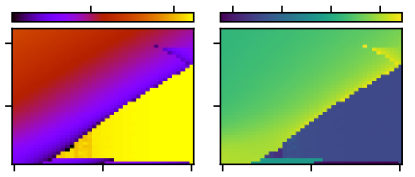
<figcaption class="paper-figure-caption"><b>Fig 2.</b> FIG. 3. Josephson gap (left panel) and magnitude of the order parameter (right panel) in the twist-angle–temperature plane for t = 10 meV.</figcaption>
</figure>
<figure class="paper-figure-card">
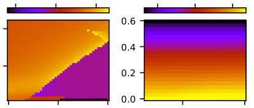
<figcaption class="paper-figure-caption"><b>Fig 3.</b> FIG. 2. Superfluid stiffnesses with (left column) and with- out (right column) phase fluctuations in the twist-angle– temperature plane for t = 10 meV. The dashed line delineates the d–(d + id′) border for the mean-field case, while such a border is obvious by the false color for the phase fluctuating case.</figcaption>
</figure>
</div>

<p><strong>Summary.</strong> This theoretical work investigates how low-energy phase fluctuations affect superconductivity in twisted d-wave bilayers, which are candidates for high-Tc chiral superconductors. By including all orders of Josephson coupling, the authors show that these fluctuations modify the stiffnesses of superconducting phases and induce a gap in the relative-phase mode. This indicates a breakdown of Josephson phase locking near quantum critical points.</p>
<p><strong>Why it may be interesting.</strong> The detailed analysis of collective modes and the role of higher-order couplings in determining superconducting stability is highly relevant to understanding pairing mechanisms and quantum critical points in strongly correlated superconductors.</p>
<details>
<summary>Detailed structure</summary>
<p><strong>Main problem.</strong> The study analyzes low-energy phase fluctuations in twisted d-wave superconducting bilayers, which are predicted to host high-temperature chiral superconductivity.</p>
<p><strong>Main result.</strong> Phase fluctuations significantly modify the collective mode dynamics, suppressing relative-phase stiffness but enhancing overall-phase stiffness in the $d+id'$ phase. The relative-phase mode acquires a gap that vanishes near the quantum critical point.</p>
<p><strong>Method.</strong> The authors employ a theoretical analysis using an effective action approach, systematically retaining Josephson coupling to all orders and expanding fluctuations to quadratic order.</p>
<p><strong>Model / system.</strong> The system is modeled as twisted cuprate bilayers exhibiting $d$-wave superconductivity, starting from a continuum microscopic model including interlayer tunneling and long-range Coulomb repulsion.</p>
<p><strong>Key observables.</strong> Superfluid stiffnesses ($D_0, D_\pi$), the relative-phase excitation gap ($\Delta_J$), and the overall phase stiffness ($D_0$).</p>
<p><strong>Important parameters / regimes.</strong> Twist angle, temperature (low T regime), interlayer tunneling amplitude ($t$), and superconducting order parameters ($\Delta_l$).</p>
<p><strong>Assumptions / limitations.</strong> The analysis is restricted to low-energy, long-wavelength fluctuations, and the derivation relies on expanding fluctuation terms up to quadratic order.</p>
<p><strong>Figures summary.</strong> Figures illustrate minimal superconducting gaps in the twist-angle–temperature plane, superfluid stiffnesses vs. temperature/twist angle, and Josephson gap dependence on parameters.</p>
<p><strong>Paper structure.</strong> The paper progresses from deriving an effective action for phase fluctuations by integrating out fermionic fields to calculating specific observables like stiffnesses and gaps using mean-field theory corrections.</p>
</details>
<details>
<summary>Abstract</summary>
<p>Twisted cuprate bilayers have been predicted to host high-temperature chiral $d+id'$ superconductivity, originating from higher-order Josephson coupling processes. In such two-dimensional superconducting systems, long-wavelength fluctuations in the phase of the superconducting order parameter constitute gapless collective modes and therefore remain significant even at zero temperature. Here, we perform a theoretical analysis of the low-energy phase fluctuations in twisted $d$-wave superconducting bilayers, systematically retaining Josephson coupling to all orders. We demonstrate that higher-order Josephson coupling processes lead to nontrivial modifications of the phase dynamics. In particular, the stiffness of the relative phase between the two layers is finite even in the normal state, which is a direct consequence of the intralayer U(1) symmetry breaking explicitly induced by interlayer tunneling. Phase fluctuations suppress the relative-phase stiffness but enhance the overall-phase stiffness in the $d+id'$ phase. Furthermore, the relative-phase fluctuations acquire a small but finite excitation gap, which is no longer equal to the Josephson plasma frequency and is strongly suppressed upon approaching the chiral quantum critical point, indicating the breakdown of Josephson phase locking within the superconducting state.</p>
</details>
<p><sub><a href="#top">↑ back to top</a></sub></p>

<hr>
<p>
<a href="index.html">← Index</a>
 · <a href="papers_05.html">← Previous</a>
</p>
<hr>

</body>
</html>
